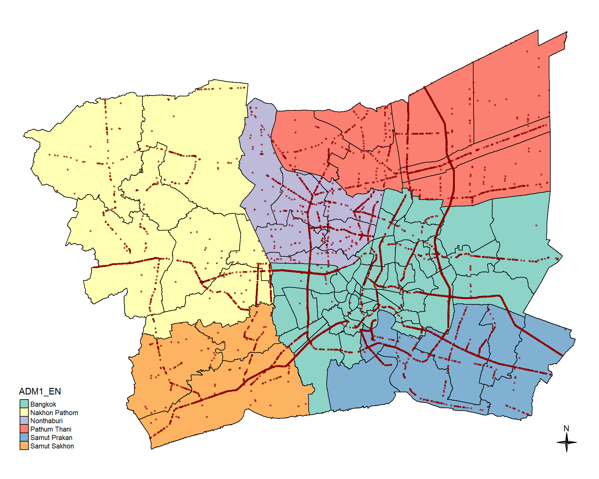
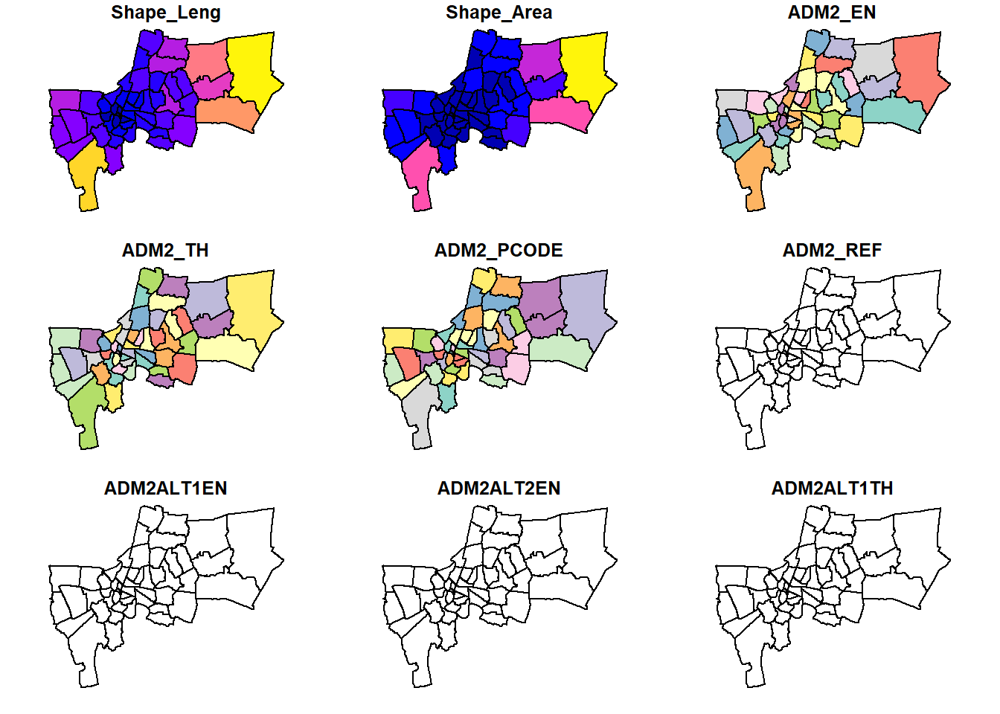

pacman::p_load(sf, spatstat, raster, tmap,tidyverse,
spNetwork, spdep, lubridate)
set.seed(1234) # To ensure that random processes in the code produce the same results every time the code is run. Take-home Exercise 1: Geospatial Analytics for Public Good
1 Overview: Case study on factors affecting road traffic accidents in the Bangkok Metropolitan Region (BMR)
According to the World Health Organization (WHO), road traffic accidents claim the lives of around 1.19 million people annually and leave 20 to 50 million others with non-fatal injuries. Vulnerable road users, such as pedestrians, cyclists, and motorcyclists, account for more than half of these fatalities.
Road traffic injuries are the leading cause of death for individuals aged 5 to 29. Additionally, two-thirds of road traffic fatalities occur among people of working age (18–59 years). Despite having only about 60% of the world’s vehicles, low- and middle-income countries account for 92% of road traffic fatalities.
Beyond the human toll, road accidents impose a significant economic burden on victims and their families due to medical costs and the loss of productivity from those who are killed or disabled. On a national level, these injuries cost countries around 3% of their gross domestic product (GDP).
Thailand has the most dangerous roads in Southeast Asia and ranks among the worst globally, with approximately 20,000 deaths from road accidents each year, averaging 56 deaths per day (WHO) and a million injuries each year, incurring an economic loss of 500,000 million baht.
Between 2014 and 2021, Thailand saw a rise in accident frequency, with 19% occurring on the national highways, which serve as the main public roads connecting regions, provinces, and key locations. Nationally, there is a 66% chance of encountering accident-prone areas, also known as ‘black spots.’ These are distributed as follows: 66% on straight road sections, 13% on curves, 6% at median points of cross intersections, 5% at T- or Y-intersections, 3% at cross intersections, and 2% on both bridges and steep slopes.
1.1 Objectives
The primary causes of road traffic accidents can be attributed to behavioural factors, such as: driver behaviour, performance, and environmental factors, like weather conditions and road design. While past studies using Spatial Point Patterns Analysis (SPPA) have explored these factors, they often overlook the impact of temporal factors, such as season or time of day.
The task is to identify factors influencing road traffic accidents in the Bangkok Metropolitan Region (BMR) using both spatial and spatio-temporal point patterns analysis. The objectives include visualizing spatio-temporal accident dynamics and conducting detailed spatial and temporal analyses using Network Spatial Point Patterns Analysis methods.
1.2 Datasets
Three basic data sets must be used for this exercise, they are:
Thailand Road Accident [2019-2022] on Kaggle
- This dataset provides comprehensive statistics on recorded road accidents in Thailand, spanning from approximately 2019 to 2022. The data was sourced from raw information provided by the Office of the Permanent Secretary, Ministry of Transport. The dataset encompasses various aspects of road accidents and aims to shed light on the trends and patterns within this critical area of concern, analysis of this data could be crucial in guiding road safety policies and measures
1.3 Setting Up
1.3.1 Setting up the R environment
In this exercise, seven R packages will be used, they are:
| Packages | Description |
|---|---|
| sf | A relatively new R package specially designed to import, manage and process vector-based geospatial data in R |
| spatstat | Which has a wide range of useful functions for point pattern analysis. In this hands-on exercise, it will be used to perform 1st- and 2nd-order spatial point patterns analysis and derive kernel density estimation (KDE) layer. |
| raster | Which reads, writes, manipulates, analyses and model of gridded spatial data (i.e. raster). In this exercise, it will be used to convert image output generate by spatstat into raster format |
| tmap | which provides functions for plotting cartographic quality static point patterns maps or interactive maps by using leaflet API. |
| tidyverse | a family of modern R packages specially designed to support data science, analysis and communication task including creating static statistical graphs |
| spNetwork | Which provides functions to perform Spatial Point Patterns Analysis such as kernel density estimation (KDE) and K-function on network. It also can be used to build spatial matrices (‘listw’ objects like in ‘spdep’ package) to conduct any kind of traditional spatial analysis with spatial weights based on reticular distances |
| spdep | to compute spatial contiguity weights |
| lubridate | package implements some graph layout algorithms that are not available in igraph or other packages |
The code chunk below is used to setup the R environment
1.4 Preparing the datasets
1.4.1 Defining Study Area of Data
This project will focus on the Bangkok Metropolitan Region (BMR) which comprises of five provinces surrounding Bangkok, namely, Samut Prakan, Pathum Thani, Nakhon Pathom, Samut Sakhon, and Nonthaburi. These areas are referred to as the Five Provinces and the Vicinity. Together with the Bangkok Metropolitan Area (BMA), they have become the Bangkok Metropolitan Region (BMR) Source%2C%20or%20Greater%20Bangkok.).
The code chunk below will be used to facilitate the extraction of the BMR for the datasets to avoid unnecessary provinces to be read and putting a strain on computing resources.
bmr_provinces <- c("Bangkok", "Samut Prakan", "Pathum Thani", "Nakhon Pathom", "Samut Sakhon", "Nonthaburi")1.4.2 Importing the Aspatial data
The thai_road_accident_2019_2022 data set is csv file format, read_csv() of the readr package will be used to import thai_road_accident_2019_2022.csv as shown from the code chunk below. The output R Object is called rdacc as is a tibble data frame.
rdacc <- read_csv("data/rawdata/thai_road_accident_2019_2022.csv")Upon some initial observation of the data set, it is observed that there are missing / NA values in the latitude & longitude columns which will have to be removed as it will not be suitable to do any spatial analysis on this observations. Following which there is also an incident_datetime column spanning from years 2019 to 2022 which will be utilised to identify the date and time occurrences of accidents. As such that column will be transformed for the date and time to be used for analysis.
Additionally to further set the scene (timings typically from 7 – 9 AM and 4 – 7 PM on weekdays while considering weekends to be peak throughout) will also be as pre-determined for Bangkok’s rush hours otherwise known as peak hours traffic.
The code chunk below also converts rdacc data frame into a simple feature data frame by using st_as_sf() of sf packages.
rdacc_sf <- rdacc %>%
filter(!is.na(longitude) & longitude != "",
!is.na(latitude) & latitude != "") %>%
mutate(Day_num = day(incident_datetime)) %>%
mutate(Dayofweek = wday(incident_datetime, label = TRUE, week_start = 1)) %>%
mutate(Month_num = month(incident_datetime)) %>%
mutate(Month_fac = month(incident_datetime,
label = TRUE,
abbr = TRUE)) %>%
mutate(Year = year(incident_datetime)) %>%
mutate(Hour_of_day = hour(incident_datetime)) %>%
st_as_sf(coords = c("longitude", "latitude"),
crs = 4326) %>%
st_transform(crs = 32647)1.4.2.1 Selecting the BMR provinces
rdacc_sf_bmr <- rdacc_sf %>%
filter(province_en %in% bmr_provinces)The simple feature data frame is saved into a physical file for usage. By doing so the need to repeat the steps above is not needed when running the quarto document.
write_rds(rdacc_sf_bmr, "data/rds/rdacc_sf_bmr.rds")To retrieve file
rdacc_sf_bmr <- read_rds("data/rds/rdacc_sf_bmr.rds")1.4.2.2 Using st_geometry()
st_geometry(rdacc_sf_bmr)Geometry set for 12986 features
Geometry type: POINT
Dimension: XY
Bounding box: xmin: 591277.5 ymin: 1486846 xmax: 710166.1 ymax: 1576520
Projected CRS: WGS 84 / UTM zone 47N
First 5 geometries:1.4.3 Importing Geospatial data
This dataset is in shp format and the code chunk below is used to read the file into the R environment.
road_sf <- st_read(dsn = "data/rawdata",
layer = "hotosm_tha_roads_lines_shp")Reading layer `hotosm_tha_roads_lines_shp' from data source
`C:\zjho008\ISSS626-GAA\Take-home_Ex\Take-home_Ex01\data\rawdata'
using driver `ESRI Shapefile'
Simple feature collection with 2792590 features and 14 fields
Geometry type: MULTILINESTRING
Dimension: XY
Bounding box: xmin: 97.34457 ymin: 5.643645 xmax: 105.6528 ymax: 20.47168
CRS: NAUpon importing the OSM Export, it is observed from the results that the CRS field shows NA. Hence, we will set the CRS to WGS84 with the default EPSG code of 4326 using st_set_crs() of sf package.
road_sf <- st_set_crs(road_sf, 4326)Now, to check the CSR again by using the code chunk below.
st_crs(road_sf)Coordinate Reference System:
User input: EPSG:4326
wkt:
GEOGCRS["WGS 84",
ENSEMBLE["World Geodetic System 1984 ensemble",
MEMBER["World Geodetic System 1984 (Transit)"],
MEMBER["World Geodetic System 1984 (G730)"],
MEMBER["World Geodetic System 1984 (G873)"],
MEMBER["World Geodetic System 1984 (G1150)"],
MEMBER["World Geodetic System 1984 (G1674)"],
MEMBER["World Geodetic System 1984 (G1762)"],
MEMBER["World Geodetic System 1984 (G2139)"],
ELLIPSOID["WGS 84",6378137,298.257223563,
LENGTHUNIT["metre",1]],
ENSEMBLEACCURACY[2.0]],
PRIMEM["Greenwich",0,
ANGLEUNIT["degree",0.0174532925199433]],
CS[ellipsoidal,2],
AXIS["geodetic latitude (Lat)",north,
ORDER[1],
ANGLEUNIT["degree",0.0174532925199433]],
AXIS["geodetic longitude (Lon)",east,
ORDER[2],
ANGLEUNIT["degree",0.0174532925199433]],
USAGE[
SCOPE["Horizontal component of 3D system."],
AREA["World."],
BBOX[-90,-180,90,180]],
ID["EPSG",4326]]Following which, we can utilise st_transform() of sf package to re-project road_sf from one coordinate system to another coordinate system mathematically.
road_sf <- st_transform(road_sf,
crs = 32647)Next, let us display the content of road_sf sf data frame as shown in the code chunk below using st_geometry() and glimpse() functions.
st_geometry(road_sf)Geometry set for 2792590 features
Geometry type: MULTILINESTRING
Dimension: XY
Bounding box: xmin: 325313.7 ymin: 624248.4 xmax: 1215576 ymax: 2263968
Projected CRS: WGS 84 / UTM zone 47N
First 5 geometries:glimpse(road_sf)Rows: 2,792,590
Columns: 15
$ name <chr> "ถนนฉลองกรุง", "ซอยฉลองกรุง 1/1", NA, NA, "ถนนฉลองกรุง", NA, "…
$ name_en <chr> "Chalong Krung Road", "Soi Chalong Krung 1/1", NA, NA, "Cha…
$ highway <chr> "secondary", "residential", "secondary_link", "service", "s…
$ surface <chr> "paved", NA, NA, NA, "concrete", NA, NA, "unpaved", NA, NA,…
$ smoothness <chr> NA, NA, NA, NA, NA, NA, NA, NA, NA, NA, NA, NA, NA, NA, NA,…
$ width <chr> NA, NA, NA, NA, NA, NA, NA, NA, NA, NA, NA, NA, NA, NA, NA,…
$ lanes <chr> NA, NA, NA, NA, "2", NA, NA, NA, NA, NA, NA, NA, NA, NA, NA…
$ oneway <chr> "yes", NA, "yes", NA, "yes", NA, NA, NA, NA, NA, NA, NA, NA…
$ bridge <chr> NA, NA, NA, NA, "yes", NA, NA, NA, NA, NA, NA, NA, NA, NA, …
$ layer <chr> NA, NA, NA, NA, "1", NA, NA, NA, NA, NA, NA, NA, NA, NA, NA…
$ source <chr> NA, NA, NA, NA, "Bing", NA, NA, "GPS", NA, NA, NA, NA, NA, …
$ name_th <chr> "ถนนฉลองกรุง", "ซอยฉลองกรุง 1/1", NA, NA, "ถนนฉลองกรุง", NA, "…
$ osm_id <dbl> 1125681229, 594401607, 472283206, 594401608, 116847248, 317…
$ osm_type <chr> "ways_line", "ways_line", "ways_line", "ways_line", "ways_l…
$ geometry <MULTILINESTRING [m]> MULTILINESTRING ((693686.1 ..., MULTILINEST…To check the CSR again by using the code chunk below.
st_crs(road_sf)Coordinate Reference System:
User input: EPSG:32647
wkt:
PROJCRS["WGS 84 / UTM zone 47N",
BASEGEOGCRS["WGS 84",
ENSEMBLE["World Geodetic System 1984 ensemble",
MEMBER["World Geodetic System 1984 (Transit)"],
MEMBER["World Geodetic System 1984 (G730)"],
MEMBER["World Geodetic System 1984 (G873)"],
MEMBER["World Geodetic System 1984 (G1150)"],
MEMBER["World Geodetic System 1984 (G1674)"],
MEMBER["World Geodetic System 1984 (G1762)"],
MEMBER["World Geodetic System 1984 (G2139)"],
ELLIPSOID["WGS 84",6378137,298.257223563,
LENGTHUNIT["metre",1]],
ENSEMBLEACCURACY[2.0]],
PRIMEM["Greenwich",0,
ANGLEUNIT["degree",0.0174532925199433]],
ID["EPSG",4326]],
CONVERSION["UTM zone 47N",
METHOD["Transverse Mercator",
ID["EPSG",9807]],
PARAMETER["Latitude of natural origin",0,
ANGLEUNIT["degree",0.0174532925199433],
ID["EPSG",8801]],
PARAMETER["Longitude of natural origin",99,
ANGLEUNIT["degree",0.0174532925199433],
ID["EPSG",8802]],
PARAMETER["Scale factor at natural origin",0.9996,
SCALEUNIT["unity",1],
ID["EPSG",8805]],
PARAMETER["False easting",500000,
LENGTHUNIT["metre",1],
ID["EPSG",8806]],
PARAMETER["False northing",0,
LENGTHUNIT["metre",1],
ID["EPSG",8807]]],
CS[Cartesian,2],
AXIS["(E)",east,
ORDER[1],
LENGTHUNIT["metre",1]],
AXIS["(N)",north,
ORDER[2],
LENGTHUNIT["metre",1]],
USAGE[
SCOPE["Navigation and medium accuracy spatial referencing."],
AREA["Between 96°E and 102°E, northern hemisphere between equator and 84°N, onshore and offshore. China. Indonesia. Laos. Malaysia - West Malaysia. Mongolia. Myanmar (Burma). Russian Federation. Thailand."],
BBOX[0,96,84,102]],
ID["EPSG",32647]]As the road data set provided by OSM is very comprehensive it will increase the computation times a lot and some of the classes might not be useful for analysis. Hence, we will explore what are the classes included and selecting those relevant ones based on the Highway Classification.
unique(road_sf$highway) [1] "secondary" "residential" "secondary_link" "service"
[5] "tertiary" "path" "footway" "track"
[9] "unclassified" "trunk" "trunk_link" "primary"
[13] "primary_link" "steps" "motorway_link" "cycleway"
[17] "pedestrian" "tertiary_link" "motorway" "construction"
[21] "road" "raceway" "corridor" "living_street"
[25] "escape" "proposed" "busway" "bridleway"
[29] "abandoned" "parth" "barrier" "paved" The code chunk below is used to filter only the relevant highways based on the classification and selecting other relevant columns that will be used.
road_sf <- road_sf %>%
filter(highway %in% c("motorway", "trunk", "primary", "secondary", "tertiary", "unclassified",
"residential", "service")) %>%
select(highway, osm_id, osm_type, geometry)1.4.3.1 Saving the OSM rds file
write_rds(road_sf, "data/rds/road_sf.rds")To retrieve file
road_sf <- read_rds("data/rds/road_sf.rds")1.5 Thailand - Subnational Administrative Boundaries
Reading the administrative boundaries for Thailand
It is also relevant to note from the HDX website the levels stated in the dataset represent different administrative levels.

thadm <- st_read(dsn = "data/rawdata",
layer = "tha_admbnda_adm1_rtsd_20220121")Reading layer `tha_admbnda_adm1_rtsd_20220121' from data source
`C:\zjho008\ISSS626-GAA\Take-home_Ex\Take-home_Ex01\data\rawdata'
using driver `ESRI Shapefile'
Simple feature collection with 77 features and 16 fields
Geometry type: MULTIPOLYGON
Dimension: XY
Bounding box: xmin: 97.34336 ymin: 5.613038 xmax: 105.637 ymax: 20.46507
Geodetic CRS: WGS 84The message above reveals that the geospatial objects are multipolygon features. There are a total of 77 multipolygon feature representing the different provinces in Thailand and 16 fields in thadm (Thailand Administrative) simple feature data frame. thadm is in WGS84 Geodetic coordinates system. The bounding box provides the x extend and y extend of the data.
thadm2 <- st_read(dsn = "data/rawdata",
layer = "tha_admbnda_adm2_rtsd_20220121")Reading layer `tha_admbnda_adm2_rtsd_20220121' from data source
`C:\zjho008\ISSS626-GAA\Take-home_Ex\Take-home_Ex01\data\rawdata'
using driver `ESRI Shapefile'
Simple feature collection with 928 features and 19 fields
Geometry type: MULTIPOLYGON
Dimension: XY
Bounding box: xmin: 97.34336 ymin: 5.613038 xmax: 105.637 ymax: 20.46507
Geodetic CRS: WGS 84The column in the sf data.frame that contains the geometries is a list, of class sfc. We can retrieve the geometry list-column in this case by thadm$geometry, but the more generic way uses st_geometry() as shown in the code chunk below.
st_geometry(thadm)Geometry set for 77 features
Geometry type: MULTIPOLYGON
Dimension: XY
Bounding box: xmin: 97.34336 ymin: 5.613038 xmax: 105.637 ymax: 20.46507
Geodetic CRS: WGS 84
First 5 geometries:Notice that the print only displays basic information of the feature class such as type of geometry, the geographic extent of the features and the coordinate system of the data.
st_geometry(thadm2)Geometry set for 928 features
Geometry type: MULTIPOLYGON
Dimension: XY
Bounding box: xmin: 97.34336 ymin: 5.613038 xmax: 105.637 ymax: 20.46507
Geodetic CRS: WGS 84
First 5 geometries:One of the common issue that can happen during importing geospatial data into R is that the coordinate system of the source data was either missing (such as due to missing .proj for ESRI shapefile) or wrongly assigned during the importing process.
This is an example the coordinate system of mpsz simple feature data frame by using st_crs() of sf package as shown in the code chunk below.
st_crs(thadm)Coordinate Reference System:
User input: WGS 84
wkt:
GEOGCRS["WGS 84",
DATUM["World Geodetic System 1984",
ELLIPSOID["WGS 84",6378137,298.257223563,
LENGTHUNIT["metre",1]]],
PRIMEM["Greenwich",0,
ANGLEUNIT["degree",0.0174532925199433]],
CS[ellipsoidal,2],
AXIS["latitude",north,
ORDER[1],
ANGLEUNIT["degree",0.0174532925199433]],
AXIS["longitude",east,
ORDER[2],
ANGLEUNIT["degree",0.0174532925199433]],
ID["EPSG",4326]]Although thadm data frame is projected in WGS84 but when we read until the end of the print, it indicates that the EPSG is 4326. This is a wrong EPSG code because the correct EPSG code for Thailand should be 32647.
st_crs(thadm2)Coordinate Reference System:
User input: WGS 84
wkt:
GEOGCRS["WGS 84",
DATUM["World Geodetic System 1984",
ELLIPSOID["WGS 84",6378137,298.257223563,
LENGTHUNIT["metre",1]]],
PRIMEM["Greenwich",0,
ANGLEUNIT["degree",0.0174532925199433]],
CS[ellipsoidal,2],
AXIS["latitude",north,
ORDER[1],
ANGLEUNIT["degree",0.0174532925199433]],
AXIS["longitude",east,
ORDER[2],
ANGLEUNIT["degree",0.0174532925199433]],
ID["EPSG",4326]]thadm <- st_transform(thadm, crs = 32647)thadm2 <- st_transform(thadm2, crs = 32647)Doing checks to ensure the following steps have been carried out correctly.
st_crs(thadm)Coordinate Reference System:
User input: EPSG:32647
wkt:
PROJCRS["WGS 84 / UTM zone 47N",
BASEGEOGCRS["WGS 84",
ENSEMBLE["World Geodetic System 1984 ensemble",
MEMBER["World Geodetic System 1984 (Transit)"],
MEMBER["World Geodetic System 1984 (G730)"],
MEMBER["World Geodetic System 1984 (G873)"],
MEMBER["World Geodetic System 1984 (G1150)"],
MEMBER["World Geodetic System 1984 (G1674)"],
MEMBER["World Geodetic System 1984 (G1762)"],
MEMBER["World Geodetic System 1984 (G2139)"],
ELLIPSOID["WGS 84",6378137,298.257223563,
LENGTHUNIT["metre",1]],
ENSEMBLEACCURACY[2.0]],
PRIMEM["Greenwich",0,
ANGLEUNIT["degree",0.0174532925199433]],
ID["EPSG",4326]],
CONVERSION["UTM zone 47N",
METHOD["Transverse Mercator",
ID["EPSG",9807]],
PARAMETER["Latitude of natural origin",0,
ANGLEUNIT["degree",0.0174532925199433],
ID["EPSG",8801]],
PARAMETER["Longitude of natural origin",99,
ANGLEUNIT["degree",0.0174532925199433],
ID["EPSG",8802]],
PARAMETER["Scale factor at natural origin",0.9996,
SCALEUNIT["unity",1],
ID["EPSG",8805]],
PARAMETER["False easting",500000,
LENGTHUNIT["metre",1],
ID["EPSG",8806]],
PARAMETER["False northing",0,
LENGTHUNIT["metre",1],
ID["EPSG",8807]]],
CS[Cartesian,2],
AXIS["(E)",east,
ORDER[1],
LENGTHUNIT["metre",1]],
AXIS["(N)",north,
ORDER[2],
LENGTHUNIT["metre",1]],
USAGE[
SCOPE["Navigation and medium accuracy spatial referencing."],
AREA["Between 96°E and 102°E, northern hemisphere between equator and 84°N, onshore and offshore. China. Indonesia. Laos. Malaysia - West Malaysia. Mongolia. Myanmar (Burma). Russian Federation. Thailand."],
BBOX[0,96,84,102]],
ID["EPSG",32647]]st_crs(thadm2)Coordinate Reference System:
User input: EPSG:32647
wkt:
PROJCRS["WGS 84 / UTM zone 47N",
BASEGEOGCRS["WGS 84",
ENSEMBLE["World Geodetic System 1984 ensemble",
MEMBER["World Geodetic System 1984 (Transit)"],
MEMBER["World Geodetic System 1984 (G730)"],
MEMBER["World Geodetic System 1984 (G873)"],
MEMBER["World Geodetic System 1984 (G1150)"],
MEMBER["World Geodetic System 1984 (G1674)"],
MEMBER["World Geodetic System 1984 (G1762)"],
MEMBER["World Geodetic System 1984 (G2139)"],
ELLIPSOID["WGS 84",6378137,298.257223563,
LENGTHUNIT["metre",1]],
ENSEMBLEACCURACY[2.0]],
PRIMEM["Greenwich",0,
ANGLEUNIT["degree",0.0174532925199433]],
ID["EPSG",4326]],
CONVERSION["UTM zone 47N",
METHOD["Transverse Mercator",
ID["EPSG",9807]],
PARAMETER["Latitude of natural origin",0,
ANGLEUNIT["degree",0.0174532925199433],
ID["EPSG",8801]],
PARAMETER["Longitude of natural origin",99,
ANGLEUNIT["degree",0.0174532925199433],
ID["EPSG",8802]],
PARAMETER["Scale factor at natural origin",0.9996,
SCALEUNIT["unity",1],
ID["EPSG",8805]],
PARAMETER["False easting",500000,
LENGTHUNIT["metre",1],
ID["EPSG",8806]],
PARAMETER["False northing",0,
LENGTHUNIT["metre",1],
ID["EPSG",8807]]],
CS[Cartesian,2],
AXIS["(E)",east,
ORDER[1],
LENGTHUNIT["metre",1]],
AXIS["(N)",north,
ORDER[2],
LENGTHUNIT["metre",1]],
USAGE[
SCOPE["Navigation and medium accuracy spatial referencing."],
AREA["Between 96°E and 102°E, northern hemisphere between equator and 84°N, onshore and offshore. China. Indonesia. Laos. Malaysia - West Malaysia. Mongolia. Myanmar (Burma). Russian Federation. Thailand."],
BBOX[0,96,84,102]],
ID["EPSG",32647]]Besides the basic feature information, we also would like to learn more about the associated attribute information in the data frame. This is the time glimpse() of dplyr comes in handy as shown in the code chunk below.
glimpse(thadm)Rows: 77
Columns: 17
$ Shape_Leng <dbl> 2.417227, 1.695100, 1.251111, 1.884945, 3.041716, 1.739908,…
$ Shape_Area <dbl> 0.13133873, 0.07926199, 0.05323766, 0.12698345, 0.21393797,…
$ ADM1_EN <chr> "Bangkok", "Samut Prakan", "Nonthaburi", "Pathum Thani", "P…
$ ADM1_TH <chr> "กรุงเทพมหานคร", "สมุทรปราการ", "นนทบุรี", "ปทุมธานี", "พระนครศรีอ…
$ ADM1_PCODE <chr> "TH10", "TH11", "TH12", "TH13", "TH14", "TH15", "TH16", "TH…
$ ADM1_REF <chr> NA, NA, NA, NA, NA, NA, NA, NA, NA, NA, NA, NA, NA, NA, NA,…
$ ADM1ALT1EN <chr> NA, NA, NA, NA, NA, NA, NA, NA, NA, NA, NA, NA, NA, NA, NA,…
$ ADM1ALT2EN <chr> NA, NA, NA, NA, NA, NA, NA, NA, NA, NA, NA, NA, NA, NA, NA,…
$ ADM1ALT1TH <chr> NA, NA, NA, NA, NA, NA, NA, NA, NA, NA, NA, NA, NA, NA, NA,…
$ ADM1ALT2TH <chr> NA, NA, NA, NA, NA, NA, NA, NA, NA, NA, NA, NA, NA, NA, NA,…
$ ADM0_EN <chr> "Thailand", "Thailand", "Thailand", "Thailand", "Thailand",…
$ ADM0_TH <chr> "ประเทศไทย", "ประเทศไทย", "ประเทศไทย", "ประเทศไทย", "ประเทศ…
$ ADM0_PCODE <chr> "TH", "TH", "TH", "TH", "TH", "TH", "TH", "TH", "TH", "TH",…
$ date <date> 2019-02-18, 2019-02-18, 2019-02-18, 2019-02-18, 2019-02-18…
$ validOn <date> 2022-01-22, 2022-01-22, 2022-01-22, 2022-01-22, 2022-01-22…
$ validTo <date> -001-11-30, -001-11-30, -001-11-30, -001-11-30, -001-11-30…
$ geometry <MULTIPOLYGON [m]> MULTIPOLYGON (((674339.8 15..., MULTIPOLYGON (…glimpse() report reveals the data type of each fields. For example date field is in date data type, Shape_Leng and Shape_Area fields are all in double-precision values.
glimpse(thadm2)Rows: 928
Columns: 20
$ Shape_Leng <dbl> 0.08541733, 0.13413177, 0.67634217, 0.08588647, 0.30172202,…
$ Shape_Area <dbl> 0.0004504685, 0.0009501914, 0.0198588627, 0.0003369561, 0.0…
$ ADM2_EN <chr> "Phra Nakhon", "Dusit", "Nong Chok", "Bang Rak", "Bang Khen…
$ ADM2_TH <chr> "พระนคร", "ดุสิต", "หนองจอก", "บางรัก", "บางเขน", "บางกะปิ", "ป…
$ ADM2_PCODE <chr> "TH1001", "TH1002", "TH1003", "TH1004", "TH1005", "TH1006",…
$ ADM2_REF <chr> NA, NA, NA, NA, NA, NA, NA, NA, NA, NA, NA, NA, NA, NA, NA,…
$ ADM2ALT1EN <chr> NA, NA, NA, NA, NA, NA, NA, NA, NA, NA, NA, NA, NA, NA, NA,…
$ ADM2ALT2EN <chr> NA, NA, NA, NA, NA, NA, NA, NA, NA, NA, NA, NA, NA, NA, NA,…
$ ADM2ALT1TH <chr> NA, NA, NA, NA, NA, NA, NA, NA, NA, NA, NA, NA, NA, NA, NA,…
$ ADM2ALT2TH <chr> NA, NA, NA, NA, NA, NA, NA, NA, NA, NA, NA, NA, NA, NA, NA,…
$ ADM1_EN <chr> "Bangkok", "Bangkok", "Bangkok", "Bangkok", "Bangkok", "Ban…
$ ADM1_TH <chr> "กรุงเทพมหานคร", "กรุงเทพมหานคร", "กรุงเทพมหานคร", "กรุงเทพมหาน…
$ ADM1_PCODE <chr> "TH10", "TH10", "TH10", "TH10", "TH10", "TH10", "TH10", "TH…
$ ADM0_EN <chr> "Thailand", "Thailand", "Thailand", "Thailand", "Thailand",…
$ ADM0_TH <chr> "ประเทศไทย", "ประเทศไทย", "ประเทศไทย", "ประเทศไทย", "ประเทศ…
$ ADM0_PCODE <chr> "TH", "TH", "TH", "TH", "TH", "TH", "TH", "TH", "TH", "TH",…
$ date <date> 2019-02-18, 2019-02-18, 2019-02-18, 2019-02-18, 2019-02-18…
$ validOn <date> 2022-01-22, 2022-01-22, 2022-01-22, 2022-01-22, 2022-01-22…
$ validTo <date> -001-11-30, -001-11-30, -001-11-30, -001-11-30, -001-11-30…
$ geometry <MULTIPOLYGON [m]> MULTIPOLYGON (((662263.2 15..., MULTIPOLYGON (…In geospatial data science, by looking at the feature information is not enough. We are also interested to visualise the geospatial features. This is the time plot() of R Graphic comes in very handy as shown in the code chunk below.
plot(st_geometry(thadm))Alternatively, we can also choose the plot the sf object by using a specific attribute as shown in the code chunk below.
plot(thadm["ADM1_EN"])
plot() function is utilised again to visualise the features but consisting the districts
tm_shape(thadm)+
tm_fill("ADM1_EN",
title = "Thailand Boundary") +
tm_layout(main.title = "Map of Thailand",
main.title.position = "center",
main.title.size = 1.5,
legend.height = 0.6,
legend.width = 0.4,
frame = TRUE) +
tm_borders(alpha = 0.5) +
tm_compass(type = "4star", size = 2) +
tm_scale_bar() +
tm_grid(alpha = 0.2) +
tmap_options(max.categories = 77)
1.6 Data Wrangling
1.6.1 Defining Study Area of Data
bmr_provinces will be used in confining the geospatial data to the study area,we will utilise the code chunk below.
thadm_bmr <- thadm %>%
filter(ADM1_EN %in% bmr_provinces)
summary(thadm_bmr) Shape_Leng Shape_Area ADM1_EN ADM1_TH
Min. :1.251 Min. :0.05324 Length:6 Length:6
1st Qu.:1.599 1st Qu.:0.07349 Class :character Class :character
Median :1.790 Median :0.10312 Mode :character Mode :character
Mean :1.880 Mean :0.10688
3rd Qu.:2.284 3rd Qu.:0.13025
Max. :2.463 Max. :0.17891
ADM1_PCODE ADM1_REF ADM1ALT1EN ADM1ALT2EN
Length:6 Length:6 Length:6 Length:6
Class :character Class :character Class :character Class :character
Mode :character Mode :character Mode :character Mode :character
ADM1ALT1TH ADM1ALT2TH ADM0_EN ADM0_TH
Length:6 Length:6 Length:6 Length:6
Class :character Class :character Class :character Class :character
Mode :character Mode :character Mode :character Mode :character
ADM0_PCODE date validOn
Length:6 Min. :2019-02-18 Min. :2022-01-22
Class :character 1st Qu.:2019-02-18 1st Qu.:2022-01-22
Mode :character Median :2019-02-18 Median :2022-01-22
Mean :2019-02-18 Mean :2022-01-22
3rd Qu.:2019-02-18 3rd Qu.:2022-01-22
Max. :2019-02-18 Max. :2022-01-22
validTo geometry
Min. :-001-11-30 MULTIPOLYGON :6
1st Qu.:-001-11-30 epsg:32647 :0
Median :-001-11-30 +proj=utm ...:0
Mean :-001-11-30
3rd Qu.:-001-11-30
Max. :-001-11-30 thadm2_bmr <- thadm2 %>%
filter(ADM1_EN %in% bmr_provinces)
summary(thadm2_bmr) Shape_Leng Shape_Area ADM2_EN ADM2_TH
Min. :0.05123 Min. :0.0001177 Length:79 Length:79
1st Qu.:0.16740 1st Qu.:0.0010931 Class :character Class :character
Median :0.28074 Median :0.0030914 Mode :character Mode :character
Mean :0.41054 Mean :0.0081177
3rd Qu.:0.61018 3rd Qu.:0.0107533
Max. :1.26897 Max. :0.0454895
ADM2_PCODE ADM2_REF ADM2ALT1EN ADM2ALT2EN
Length:79 Length:79 Length:79 Length:79
Class :character Class :character Class :character Class :character
Mode :character Mode :character Mode :character Mode :character
ADM2ALT1TH ADM2ALT2TH ADM1_EN ADM1_TH
Length:79 Length:79 Length:79 Length:79
Class :character Class :character Class :character Class :character
Mode :character Mode :character Mode :character Mode :character
ADM1_PCODE ADM0_EN ADM0_TH ADM0_PCODE
Length:79 Length:79 Length:79 Length:79
Class :character Class :character Class :character Class :character
Mode :character Mode :character Mode :character Mode :character
date validOn validTo
Min. :2019-02-18 Min. :2022-01-22 Min. :-001-11-30
1st Qu.:2019-02-18 1st Qu.:2022-01-22 1st Qu.:-001-11-30
Median :2019-02-18 Median :2022-01-22 Median :-001-11-30
Mean :2019-02-18 Mean :2022-01-22 Mean :-001-11-30
3rd Qu.:2019-02-18 3rd Qu.:2022-01-22 3rd Qu.:-001-11-30
Max. :2019-02-18 Max. :2022-01-22 Max. :-001-11-30
geometry
MULTIPOLYGON :79
epsg:32647 : 0
+proj=utm ...: 0
tm_shape(thadm_bmr)+
tm_fill("ADM1_EN",
title = "Thailand BMR") +
tm_layout(main.title = "Maping of Bangkok Metropolitan Region",
main.title.position = "center",
main.title.size = 1.5,
legend.height = 0.6,
legend.width = 0.4,
frame = TRUE) +
tm_borders(alpha = 0.5) +
tm_compass(type = "4star", size = 2) +
tm_scale_bar() +
tm_grid(alpha = 0.2)
tm_shape(thadm2_bmr)+
tm_fill("ADM1_EN",
title = "Thailand BMR") +
tm_layout(main.title = "Maping of Bangkok Metropolitan Region",
main.title.position = "center",
main.title.size = 1.5,
legend.height = 0.6,
legend.width = 0.4,
frame = TRUE) +
tm_borders(alpha = 0.5) +
tm_compass(type = "4star", size = 2) +
tm_scale_bar() +
tm_grid(alpha = 0.2)The simple feature data frame is saved into a physical file for usage. By doing so the need to repeat the steps above is not needed.
1.6.1.1 Saving the Province level rds file
write_rds(thadm_bmr, "data/rds/thadm_bmr.rds")To retrieve file
thadm_bmr <- read_rds("data/rds/thadm_bmr.rds")1.6.1.2 Saving the District level rds file
write_rds(thadm2_bmr, "data/rds/thadm2_bmr.rds")To retrieve file
thadm2_bmr <- read_rds("data/rds/thadm2_bmr.rds")1.7 Deriving the intersection of BMR on the province level
In this step, the code chunk uses st_intersection() at the province level and saved as an RDS file.
th_bmr_province <- st_intersection(thadm_bmr, road_sf)Following the earlier steps, this will be saved as an RDS file in order to improve computational efficiency.
write_rds(th_bmr_province, "data/rds/th_bmr_province.rds") To retrieve file
th_bmr_province <- read_rds("data/rds/th_bmr_province.rds")In this following step, st_intersection() function is applied at the district level and saved as an RDS file.
th_bmr_network <- st_intersection(thadm2_bmr, th_bmr_province)write_rds(th_bmr_network,"data/rds/th_bmr_network.rds")To retrieve file
th_bmr_network <- read_rds("data/rds/th_bmr_network.rds")1.8 Exploratory Data Analysis (EDA)
1.8.1 Bar Plot
We will proceed to do some initial visualisation of the data to get a better sense of the accident data.
The barplot while not classified under as a spatial EDA kick-starts the EDA process.
ggplot(rdacc_sf_bmr, aes(x = province_en)) +
geom_bar(fill = "salmon", color = "black", bins = 20) +
geom_text(stat = "count", aes(label = after_stat(count)), vjust = -0.5) +
labs(title = "Count of Accidents by Province within BMR",
x = "Province",
y = "Count of Accidents")From the barplot it can be observed that out of the 6 provinces in the BMR, Bangkok has the highest count of accidents followed by Samut Prakan and Pathum Thani.
1.8.2 BMR map plot using tmap() elements
The elements of tmap are utilised in the code chunk below to plat a cartographic map to supplement the initial observations in the bar plot.
Making use of the view mode it presents details for each accident point in the BMR, stating the presumed_cause, accident_type, weather and road conditions as well as shown in a snippet below.
{kind=link}
tmap_mode("plot")
tm_shape(thadm2_bmr) +
tm_borders(alpha = 1, col = "black") +
tm_fill("ADM1_EN") +
tm_shape(rdacc_sf_bmr) +
tm_dots(col = "darkred", alpha = 0.5, size = 0.05) +
tm_layout(frame = FALSE) +
tm_compass(type = "4star", size = 2)
Based on the plot above, some observations can be inferred from the map visual where accidents tend to be more concentrated in the provinces of Bangkok, Samut Prakan and Pathum Thani.
1.8.3 Temporal factors
A series of time factors ranging from years to hours are also shown in relation to accident occurences.
ggplot(rdacc_sf_bmr, aes(x = Year)) +
geom_bar(fill = "blue", color = "black") +
labs(x = "Month", y = "Count", title = "Barplot of Accidents in BMR across Years")Based on the year observations the accidents seem relatively even with the exception of year 2022 surpassing a 3500 accident count.
ggplot(rdacc_sf_bmr, aes(x = Month_fac)) +
geom_bar(fill = "blue", color = "black") +
labs(x = "Month", y = "Count", title = "Barplot of Accidents in BMR across Months")For a month period, we can observe that the Months of January, April, October and December stand out amongst the rest of the months. A simple explanation could be:
- January (New Year celebrations, Chinese New Year)
- April (Songkran)
- October (Festivals - King Chulalongkorn Day etc. or Increasing tourist visits in Q4)
- December (Chrismas and End of Year celebrations)
Note that this are some assumptions based on occurring events/festivals that occur in Thailand.
ggplot(rdacc_sf_bmr, aes(x = Dayofweek)) +
geom_bar(fill = "blue", color = "black") +
labs(x = "Month", y = "Count", title = "Barplot of Accidents in BMR across Days")ggplot(rdacc_sf_bmr, aes(x = Hour_of_day)) +
geom_bar(fill = "blue", color = "black") +
labs(x = "Hour of Day", y = "Count", title = "Barplot of Accidents in BMR across 24 hours")Higher occurence of accidents occuring during the following hours:
- 7am - 11am
- 1pm - 4pm
- 7pm
1.9 Geospatial Analysis
1.9.1 Geospatial Data Wrangling
Moving to geospatial analysis, the packages require the input geospatial data in sp’s Spatial* classes. In this section, simple feature data frame will be converted to sp’s Spatial* class.
1.9.1.1 Converting sf data frames to sp’s Spatial class
The code chunk below uses as_Spatial() of sf package to convert the geospatial data from simple feature data frame to sp’s Spatial class.
bmr_accidents <- as_Spatial(rdacc_sf_bmr)
bmr <- as_Spatial(thadm_bmr)Displaying the information of the Spatial* classes as shown in the code chunk below.
bmr_accidentsclass : SpatialPointsDataFrame
features : 12986
extent : 591277.5, 710166.1, 1486846, 1576520 (xmin, xmax, ymin, ymax)
crs : +proj=utm +zone=47 +datum=WGS84 +units=m +no_defs
variables : 22
names : acc_code, incident_datetime, report_datetime, province_th, province_en, agency, route, vehicle_type, presumed_cause, accident_type, number_of_vehicles_involved, number_of_fatalities, number_of_injuries, weather_condition, road_description, ...
min values : 571882, 1546309500, 1546311900, กรุงเทพมหานคร, Bangkok, department of highways, เชื่อมทางหลวงท้องถิ่นบางเสาธง - บ้านช้างตาย, 4-wheel pickup truck, abrupt lane change, collision at intersection corner, 0, 0, 0, clear, connecting to private area, ...
max values : 7570954, 1672528260, 1674726540, สมุทรสาคร, Samut Sakhon, expressway authority of thailand, อุดมสุข - สมุทรปราการ, van, worn-out/tire blowout, turning/retreating collision, 12, 13, 51, rainy, y-intersection, ... bmrclass : SpatialPolygonsDataFrame
features : 6
extent : 587893.5, 712440.5, 1484414, 1579076 (xmin, xmax, ymin, ymax)
crs : +proj=utm +zone=47 +datum=WGS84 +units=m +no_defs
variables : 16
names : Shape_Leng, Shape_Area, ADM1_EN, ADM1_TH, ADM1_PCODE, ADM1_REF, ADM1ALT1EN, ADM1ALT2EN, ADM1ALT1TH, ADM1ALT2TH, ADM0_EN, ADM0_TH, ADM0_PCODE, date, validOn, ...
min values : 1.25111117749, 0.0532376597241, Bangkok, กรุงเทพมหานคร, TH10, NA, NA, NA, NA, NA, Thailand, ประเทศไทย, TH, 17945, 19014, ...
max values : 2.46303035967, 0.178914199749, Samut Sakhon, สมุทรสาคร, TH74, NA, NA, NA, NA, NA, Thailand, ประเทศไทย, TH, 17945, 19014, ... 1.9.1.2 Converting Spatial class into generic sp format
bmr_accidents_sp <- as(bmr_accidents, "SpatialPoints")
bmr_sp <- as(bmr, "SpatialPolygons")Displaying the sp objects properties as shown below.
bmr_accidents_spclass : SpatialPoints
features : 12986
extent : 591277.5, 710166.1, 1486846, 1576520 (xmin, xmax, ymin, ymax)
crs : +proj=utm +zone=47 +datum=WGS84 +units=m +no_defs bmr_spclass : SpatialPolygons
features : 6
extent : 587893.5, 712440.5, 1484414, 1579076 (xmin, xmax, ymin, ymax)
crs : +proj=utm +zone=47 +datum=WGS84 +units=m +no_defs 1.9.1.3 Converting the generic sp format into spatstat’s ppp format
Next, as.ppp() function of spatstat will be used to convert the spatial data into spatstat’s ppp object format.
bmr_accidents_ppp <- as.ppp(rdacc_sf_bmr)
bmr_accidents_pppMarked planar point pattern: 12986 points
marks are numeric, of storage type 'double'
window: rectangle = [591277.5, 710166.1] x [1486845.7, 1576520.5] unitsplot(bmr_accidents_ppp)Using the summary() function allows a preview of the summary statistics of the newly created ppp object.
summary(bmr_accidents_ppp)Marked planar point pattern: 12986 points
Average intensity 1.218049e-06 points per square unit
Coordinates are given to 10 decimal places
marks are numeric, of type 'double'
Summary:
Min. 1st Qu. Median Mean 3rd Qu. Max.
571882 3788970 3834532 4314457 6092694 7570954
Window: rectangle = [591277.5, 710166.1] x [1486845.7, 1576520.5] units
(118900 x 89670 units)
Window area = 10661300000 square units1.9.1.3.1 Handling duplicated points
Before any further evaluation, the ppp object will be checked for duplicates using the code chunk below.
any(duplicated(bmr_accidents_ppp))[1] FALSEUpon running the code chunk it gives a result of FALSE indicating no duplicated observations.
To count the number of co-incidence points, the multiplicity() function will be used as shown in the code chunk below.
multiplicity(bmr_accidents_ppp) [1] 1 1 1 1 1 1 1 1 1 1 1 1 1 1 1 1 1 1 1 1 1 1 1 1 1 1 1 1 1 1 1 1 1 1 1 1
[37] 1 1 1 1 1 1 1 1 1 1 1 1 1 1 1 1 1 1 1 1 1 1 1 1 1 1 1 1 1 1 1 1 1 1 1 1
[73] 1 1 1 1 1 1 1 1 1 1 1 1 1 1 1 1 1 1 1 1 1 1 1 1 1 1 1 1 1 1 1 1 1 1 1 1
[109] 1 1 1 1 1 1 1 1 1 1 1 1 1 1 1 1 1 1 1 1 1 1 1 1 1 1 1 1 1 1 1 1 1 1 1 1
[145] 1 1 1 1 1 1 1 1 1 1 1 1 1 1 1 1 1 1 1 1 1 1 1 1 1 1 1 1 1 1 1 1 1 1 1 1
[181] 1 1 1 1 1 1 1 1 1 1 1 1 1 1 1 1 1 1 1 1 1 1 1 1 1 1 1 1 1 1 1 1 1 1 1 1
[217] 1 1 1 1 1 1 1 1 1 1 1 1 1 1 1 1 1 1 1 1 1 1 1 1 1 1 1 1 1 1 1 1 1 1 1 1
[253] 1 1 1 1 1 1 1 1 1 1 1 1 1 1 1 1 1 1 1 1 1 1 1 1 1 1 1 1 1 1 1 1 1 1 1 1
[289] 1 1 1 1 1 1 1 1 1 1 1 1 1 1 1 1 1 1 1 1 1 1 1 1 1 1 1 1 1 1 1 1 1 1 1 1
[325] 1 1 1 1 1 1 1 1 1 1 1 1 1 1 1 1 1 1 1 1 1 1 1 1 1 1 1 1 1 1 1 1 1 1 1 1
[361] 1 1 1 1 1 1 1 1 1 1 1 1 1 1 1 1 1 1 1 1 1 1 1 1 1 1 1 1 1 1 1 1 1 1 1 1
[397] 1 1 1 1 1 1 1 1 1 1 1 1 1 1 1 1 1 1 1 1 1 1 1 1 1 1 1 1 1 1 1 1 1 1 1 1
[433] 1 1 1 1 1 1 1 1 1 1 1 1 1 1 1 1 1 1 1 1 1 1 1 1 1 1 1 1 1 1 1 1 1 1 1 1
[469] 1 1 1 1 1 1 1 1 1 1 1 1 1 1 1 1 1 1 1 1 1 1 1 1 1 1 1 1 1 1 1 1 1 1 1 1
[505] 1 1 1 1 1 1 1 1 1 1 1 1 1 1 1 1 1 1 1 1 1 1 1 1 1 1 1 1 1 1 1 1 1 1 1 1
[541] 1 1 1 1 1 1 1 1 1 1 1 1 1 1 1 1 1 1 1 1 1 1 1 1 1 1 1 1 1 1 1 1 1 1 1 1
[577] 1 1 1 1 1 1 1 1 1 1 1 1 1 1 1 1 1 1 1 1 1 1 1 1 1 1 1 1 1 1 1 1 1 1 1 1
[613] 1 1 1 1 1 1 1 1 1 1 1 1 1 1 1 1 1 1 1 1 1 1 1 1 1 1 1 1 1 1 1 1 1 1 1 1
[649] 1 1 1 1 1 1 1 1 1 1 1 1 1 1 1 1 1 1 1 1 1 1 1 1 1 1 1 1 1 1 1 1 1 1 1 1
[685] 1 1 1 1 1 1 1 1 1 1 1 1 1 1 1 1 1 1 1 1 1 1 1 1 1 1 1 1 1 1 1 1 1 1 1 1
[721] 1 1 1 1 1 1 1 1 1 1 1 1 1 1 1 1 1 1 1 1 1 1 1 1 1 1 1 1 1 1 1 1 1 1 1 1
[757] 1 1 1 1 1 1 1 1 1 1 1 1 1 1 1 1 1 1 1 1 1 1 1 1 1 1 1 1 1 1 1 1 1 1 1 1
[793] 1 1 1 1 1 1 1 1 1 1 1 1 1 1 1 1 1 1 1 1 1 1 1 1 1 1 1 1 1 1 1 1 1 1 1 1
[829] 1 1 1 1 1 1 1 1 1 1 1 1 1 1 1 1 1 1 1 1 1 1 1 1 1 1 1 1 1 1 1 1 1 1 1 1
[865] 1 1 1 1 1 1 1 1 1 1 1 1 1 1 1 1 1 1 1 1 1 1 1 1 1 1 1 1 1 1 1 1 1 1 1 1
[901] 1 1 1 1 1 1 1 1 1 1 1 1 1 1 1 1 1 1 1 1 1 1 1 1 1 1 1 1 1 1 1 1 1 1 1 1
[937] 1 1 1 1 1 1 1 1 1 1 1 1 1 1 1 1 1 1 1 1 1 1 1 1 1 1 1 1 1 1 1 1 1 1 1 1
[973] 1 1 1 1 1 1 1 1 1 1 1 1 1 1 1 1 1 1 1 1 1 1 1 1 1 1 1 1 1 1 1 1 1 1 1 1
[1009] 1 1 1 1 1 1 1 1 1 1 1 1 1 1 1 1 1 1 1 1 1 1 1 1 1 1 1 1 1 1 1 1 1 1 1 1
[1045] 1 1 1 1 1 1 1 1 1 1 1 1 1 1 1 1 1 1 1 1 1 1 1 1 1 1 1 1 1 1 1 1 1 1 1 1
[1081] 1 1 1 1 1 1 1 1 1 1 1 1 1 1 1 1 1 1 1 1 1 1 1 1 1 1 1 1 1 1 1 1 1 1 1 1
[1117] 1 1 1 1 1 1 1 1 1 1 1 1 1 1 1 1 1 1 1 1 1 1 1 1 1 1 1 1 1 1 1 1 1 1 1 1
[1153] 1 1 1 1 1 1 1 1 1 1 1 1 1 1 1 1 1 1 1 1 1 1 1 1 1 1 1 1 1 1 1 1 1 1 1 1
[1189] 1 1 1 1 1 1 1 1 1 1 1 1 1 1 1 1 1 1 1 1 1 1 1 1 1 1 1 1 1 1 1 1 1 1 1 1
[1225] 1 1 1 1 1 1 1 1 1 1 1 1 1 1 1 1 1 1 1 1 1 1 1 1 1 1 1 1 1 1 1 1 1 1 1 1
[1261] 1 1 1 1 1 1 1 1 1 1 1 1 1 1 1 1 1 1 1 1 1 1 1 1 1 1 1 1 1 1 1 1 1 1 1 1
[1297] 1 1 1 1 1 1 1 1 1 1 1 1 1 1 1 1 1 1 1 1 1 1 1 1 1 1 1 1 1 1 1 1 1 1 1 1
[1333] 1 1 1 1 1 1 1 1 1 1 1 1 1 1 1 1 1 1 1 1 1 1 1 1 1 1 1 1 1 1 1 1 1 1 1 1
[1369] 1 1 1 1 1 1 1 1 1 1 1 1 1 1 1 1 1 1 1 1 1 1 1 1 1 1 1 1 1 1 1 1 1 1 1 1
[1405] 1 1 1 1 1 1 1 1 1 1 1 1 1 1 1 1 1 1 1 1 1 1 1 1 1 1 1 1 1 1 1 1 1 1 1 1
[1441] 1 1 1 1 1 1 1 1 1 1 1 1 1 1 1 1 1 1 1 1 1 1 1 1 1 1 1 1 1 1 1 1 1 1 1 1
[1477] 1 1 1 1 1 1 1 1 1 1 1 1 1 1 1 1 1 1 1 1 1 1 1 1 1 1 1 1 1 1 1 1 1 1 1 1
[1513] 1 1 1 1 1 1 1 1 1 1 1 1 1 1 1 1 1 1 1 1 1 1 1 1 1 1 1 1 1 1 1 1 1 1 1 1
[1549] 1 1 1 1 1 1 1 1 1 1 1 1 1 1 1 1 1 1 1 1 1 1 1 1 1 1 1 1 1 1 1 1 1 1 1 1
[1585] 1 1 1 1 1 1 1 1 1 1 1 1 1 1 1 1 1 1 1 1 1 1 1 1 1 1 1 1 1 1 1 1 1 1 1 1
[1621] 1 1 1 1 1 1 1 1 1 1 1 1 1 1 1 1 1 1 1 1 1 1 1 1 1 1 1 1 1 1 1 1 1 1 1 1
[1657] 1 1 1 1 1 1 1 1 1 1 1 1 1 1 1 1 1 1 1 1 1 1 1 1 1 1 1 1 1 1 1 1 1 1 1 1
[1693] 1 1 1 1 1 1 1 1 1 1 1 1 1 1 1 1 1 1 1 1 1 1 1 1 1 1 1 1 1 1 1 1 1 1 1 1
[1729] 1 1 1 1 1 1 1 1 1 1 1 1 1 1 1 1 1 1 1 1 1 1 1 1 1 1 1 1 1 1 1 1 1 1 1 1
[1765] 1 1 1 1 1 1 1 1 1 1 1 1 1 1 1 1 1 1 1 1 1 1 1 1 1 1 1 1 1 1 1 1 1 1 1 1
[1801] 1 1 1 1 1 1 1 1 1 1 1 1 1 1 1 1 1 1 1 1 1 1 1 1 1 1 1 1 1 1 1 1 1 1 1 1
[1837] 1 1 1 1 1 1 1 1 1 1 1 1 1 1 1 1 1 1 1 1 1 1 1 1 1 1 1 1 1 1 1 1 1 1 1 1
[1873] 1 1 1 1 1 1 1 1 1 1 1 1 1 1 1 1 1 1 1 1 1 1 1 1 1 1 1 1 1 1 1 1 1 1 1 1
[1909] 1 1 1 1 1 1 1 1 1 1 1 1 1 1 1 1 1 1 1 1 1 1 1 1 1 1 1 1 1 1 1 1 1 1 1 1
[1945] 1 1 1 1 1 1 1 1 1 1 1 1 1 1 1 1 1 1 1 1 1 1 1 1 1 1 1 1 1 1 1 1 1 1 1 1
[1981] 1 1 1 1 1 1 1 1 1 1 1 1 1 1 1 1 1 1 1 1 1 1 1 1 1 1 1 1 1 1 1 1 1 1 1 1
[2017] 1 1 1 1 1 1 1 1 1 1 1 1 1 1 1 1 1 1 1 1 1 1 1 1 1 1 1 1 1 1 1 1 1 1 1 1
[2053] 1 1 1 1 1 1 1 1 1 1 1 1 1 1 1 1 1 1 1 1 1 1 1 1 1 1 1 1 1 1 1 1 1 1 1 1
[2089] 1 1 1 1 1 1 1 1 1 1 1 1 1 1 1 1 1 1 1 1 1 1 1 1 1 1 1 1 1 1 1 1 1 1 1 1
[2125] 1 1 1 1 1 1 1 1 1 1 1 1 1 1 1 1 1 1 1 1 1 1 1 1 1 1 1 1 1 1 1 1 1 1 1 1
[2161] 1 1 1 1 1 1 1 1 1 1 1 1 1 1 1 1 1 1 1 1 1 1 1 1 1 1 1 1 1 1 1 1 1 1 1 1
[2197] 1 1 1 1 1 1 1 1 1 1 1 1 1 1 1 1 1 1 1 1 1 1 1 1 1 1 1 1 1 1 1 1 1 1 1 1
[2233] 1 1 1 1 1 1 1 1 1 1 1 1 1 1 1 1 1 1 1 1 1 1 1 1 1 1 1 1 1 1 1 1 1 1 1 1
[2269] 1 1 1 1 1 1 1 1 1 1 1 1 1 1 1 1 1 1 1 1 1 1 1 1 1 1 1 1 1 1 1 1 1 1 1 1
[2305] 1 1 1 1 1 1 1 1 1 1 1 1 1 1 1 1 1 1 1 1 1 1 1 1 1 1 1 1 1 1 1 1 1 1 1 1
[2341] 1 1 1 1 1 1 1 1 1 1 1 1 1 1 1 1 1 1 1 1 1 1 1 1 1 1 1 1 1 1 1 1 1 1 1 1
[2377] 1 1 1 1 1 1 1 1 1 1 1 1 1 1 1 1 1 1 1 1 1 1 1 1 1 1 1 1 1 1 1 1 1 1 1 1
[2413] 1 1 1 1 1 1 1 1 1 1 1 1 1 1 1 1 1 1 1 1 1 1 1 1 1 1 1 1 1 1 1 1 1 1 1 1
[2449] 1 1 1 1 1 1 1 1 1 1 1 1 1 1 1 1 1 1 1 1 1 1 1 1 1 1 1 1 1 1 1 1 1 1 1 1
[2485] 1 1 1 1 1 1 1 1 1 1 1 1 1 1 1 1 1 1 1 1 1 1 1 1 1 1 1 1 1 1 1 1 1 1 1 1
[2521] 1 1 1 1 1 1 1 1 1 1 1 1 1 1 1 1 1 1 1 1 1 1 1 1 1 1 1 1 1 1 1 1 1 1 1 1
[2557] 1 1 1 1 1 1 1 1 1 1 1 1 1 1 1 1 1 1 1 1 1 1 1 1 1 1 1 1 1 1 1 1 1 1 1 1
[2593] 1 1 1 1 1 1 1 1 1 1 1 1 1 1 1 1 1 1 1 1 1 1 1 1 1 1 1 1 1 1 1 1 1 1 1 1
[2629] 1 1 1 1 1 1 1 1 1 1 1 1 1 1 1 1 1 1 1 1 1 1 1 1 1 1 1 1 1 1 1 1 1 1 1 1
[2665] 1 1 1 1 1 1 1 1 1 1 1 1 1 1 1 1 1 1 1 1 1 1 1 1 1 1 1 1 1 1 1 1 1 1 1 1
[2701] 1 1 1 1 1 1 1 1 1 1 1 1 1 1 1 1 1 1 1 1 1 1 1 1 1 1 1 1 1 1 1 1 1 1 1 1
[2737] 1 1 1 1 1 1 1 1 1 1 1 1 1 1 1 1 1 1 1 1 1 1 1 1 1 1 1 1 1 1 1 1 1 1 1 1
[2773] 1 1 1 1 1 1 1 1 1 1 1 1 1 1 1 1 1 1 1 1 1 1 1 1 1 1 1 1 1 1 1 1 1 1 1 1
[2809] 1 1 1 1 1 1 1 1 1 1 1 1 1 1 1 1 1 1 1 1 1 1 1 1 1 1 1 1 1 1 1 1 1 1 1 1
[2845] 1 1 1 1 1 1 1 1 1 1 1 1 1 1 1 1 1 1 1 1 1 1 1 1 1 1 1 1 1 1 1 1 1 1 1 1
[2881] 1 1 1 1 1 1 1 1 1 1 1 1 1 1 1 1 1 1 1 1 1 1 1 1 1 1 1 1 1 1 1 1 1 1 1 1
[2917] 1 1 1 1 1 1 1 1 1 1 1 1 1 1 1 1 1 1 1 1 1 1 1 1 1 1 1 1 1 1 1 1 1 1 1 1
[2953] 1 1 1 1 1 1 1 1 1 1 1 1 1 1 1 1 1 1 1 1 1 1 1 1 1 1 1 1 1 1 1 1 1 1 1 1
[2989] 1 1 1 1 1 1 1 1 1 1 1 1 1 1 1 1 1 1 1 1 1 1 1 1 1 1 1 1 1 1 1 1 1 1 1 1
[3025] 1 1 1 1 1 1 1 1 1 1 1 1 1 1 1 1 1 1 1 1 1 1 1 1 1 1 1 1 1 1 1 1 1 1 1 1
[3061] 1 1 1 1 1 1 1 1 1 1 1 1 1 1 1 1 1 1 1 1 1 1 1 1 1 1 1 1 1 1 1 1 1 1 1 1
[3097] 1 1 1 1 1 1 1 1 1 1 1 1 1 1 1 1 1 1 1 1 1 1 1 1 1 1 1 1 1 1 1 1 1 1 1 1
[3133] 1 1 1 1 1 1 1 1 1 1 1 1 1 1 1 1 1 1 1 1 1 1 1 1 1 1 1 1 1 1 1 1 1 1 1 1
[3169] 1 1 1 1 1 1 1 1 1 1 1 1 1 1 1 1 1 1 1 1 1 1 1 1 1 1 1 1 1 1 1 1 1 1 1 1
[3205] 1 1 1 1 1 1 1 1 1 1 1 1 1 1 1 1 1 1 1 1 1 1 1 1 1 1 1 1 1 1 1 1 1 1 1 1
[3241] 1 1 1 1 1 1 1 1 1 1 1 1 1 1 1 1 1 1 1 1 1 1 1 1 1 1 1 1 1 1 1 1 1 1 1 1
[3277] 1 1 1 1 1 1 1 1 1 1 1 1 1 1 1 1 1 1 1 1 1 1 1 1 1 1 1 1 1 1 1 1 1 1 1 1
[3313] 1 1 1 1 1 1 1 1 1 1 1 1 1 1 1 1 1 1 1 1 1 1 1 1 1 1 1 1 1 1 1 1 1 1 1 1
[3349] 1 1 1 1 1 1 1 1 1 1 1 1 1 1 1 1 1 1 1 1 1 1 1 1 1 1 1 1 1 1 1 1 1 1 1 1
[3385] 1 1 1 1 1 1 1 1 1 1 1 1 1 1 1 1 1 1 1 1 1 1 1 1 1 1 1 1 1 1 1 1 1 1 1 1
[3421] 1 1 1 1 1 1 1 1 1 1 1 1 1 1 1 1 1 1 1 1 1 1 1 1 1 1 1 1 1 1 1 1 1 1 1 1
[3457] 1 1 1 1 1 1 1 1 1 1 1 1 1 1 1 1 1 1 1 1 1 1 1 1 1 1 1 1 1 1 1 1 1 1 1 1
[3493] 1 1 1 1 1 1 1 1 1 1 1 1 1 1 1 1 1 1 1 1 1 1 1 1 1 1 1 1 1 1 1 1 1 1 1 1
[3529] 1 1 1 1 1 1 1 1 1 1 1 1 1 1 1 1 1 1 1 1 1 1 1 1 1 1 1 1 1 1 1 1 1 1 1 1
[3565] 1 1 1 1 1 1 1 1 1 1 1 1 1 1 1 1 1 1 1 1 1 1 1 1 1 1 1 1 1 1 1 1 1 1 1 1
[3601] 1 1 1 1 1 1 1 1 1 1 1 1 1 1 1 1 1 1 1 1 1 1 1 1 1 1 1 1 1 1 1 1 1 1 1 1
[3637] 1 1 1 1 1 1 1 1 1 1 1 1 1 1 1 1 1 1 1 1 1 1 1 1 1 1 1 1 1 1 1 1 1 1 1 1
[3673] 1 1 1 1 1 1 1 1 1 1 1 1 1 1 1 1 1 1 1 1 1 1 1 1 1 1 1 1 1 1 1 1 1 1 1 1
[3709] 1 1 1 1 1 1 1 1 1 1 1 1 1 1 1 1 1 1 1 1 1 1 1 1 1 1 1 1 1 1 1 1 1 1 1 1
[3745] 1 1 1 1 1 1 1 1 1 1 1 1 1 1 1 1 1 1 1 1 1 1 1 1 1 1 1 1 1 1 1 1 1 1 1 1
[3781] 1 1 1 1 1 1 1 1 1 1 1 1 1 1 1 1 1 1 1 1 1 1 1 1 1 1 1 1 1 1 1 1 1 1 1 1
[3817] 1 1 1 1 1 1 1 1 1 1 1 1 1 1 1 1 1 1 1 1 1 1 1 1 1 1 1 1 1 1 1 1 1 1 1 1
[3853] 1 1 1 1 1 1 1 1 1 1 1 1 1 1 1 1 1 1 1 1 1 1 1 1 1 1 1 1 1 1 1 1 1 1 1 1
[3889] 1 1 1 1 1 1 1 1 1 1 1 1 1 1 1 1 1 1 1 1 1 1 1 1 1 1 1 1 1 1 1 1 1 1 1 1
[3925] 1 1 1 1 1 1 1 1 1 1 1 1 1 1 1 1 1 1 1 1 1 1 1 1 1 1 1 1 1 1 1 1 1 1 1 1
[3961] 1 1 1 1 1 1 1 1 1 1 1 1 1 1 1 1 1 1 1 1 1 1 1 1 1 1 1 1 1 1 1 1 1 1 1 1
[3997] 1 1 1 1 1 1 1 1 1 1 1 1 1 1 1 1 1 1 1 1 1 1 1 1 1 1 1 1 1 1 1 1 1 1 1 1
[4033] 1 1 1 1 1 1 1 1 1 1 1 1 1 1 1 1 1 1 1 1 1 1 1 1 1 1 1 1 1 1 1 1 1 1 1 1
[4069] 1 1 1 1 1 1 1 1 1 1 1 1 1 1 1 1 1 1 1 1 1 1 1 1 1 1 1 1 1 1 1 1 1 1 1 1
[4105] 1 1 1 1 1 1 1 1 1 1 1 1 1 1 1 1 1 1 1 1 1 1 1 1 1 1 1 1 1 1 1 1 1 1 1 1
[4141] 1 1 1 1 1 1 1 1 1 1 1 1 1 1 1 1 1 1 1 1 1 1 1 1 1 1 1 1 1 1 1 1 1 1 1 1
[4177] 1 1 1 1 1 1 1 1 1 1 1 1 1 1 1 1 1 1 1 1 1 1 1 1 1 1 1 1 1 1 1 1 1 1 1 1
[4213] 1 1 1 1 1 1 1 1 1 1 1 1 1 1 1 1 1 1 1 1 1 1 1 1 1 1 1 1 1 1 1 1 1 1 1 1
[4249] 1 1 1 1 1 1 1 1 1 1 1 1 1 1 1 1 1 1 1 1 1 1 1 1 1 1 1 1 1 1 1 1 1 1 1 1
[4285] 1 1 1 1 1 1 1 1 1 1 1 1 1 1 1 1 1 1 1 1 1 1 1 1 1 1 1 1 1 1 1 1 1 1 1 1
[4321] 1 1 1 1 1 1 1 1 1 1 1 1 1 1 1 1 1 1 1 1 1 1 1 1 1 1 1 1 1 1 1 1 1 1 1 1
[4357] 1 1 1 1 1 1 1 1 1 1 1 1 1 1 1 1 1 1 1 1 1 1 1 1 1 1 1 1 1 1 1 1 1 1 1 1
[4393] 1 1 1 1 1 1 1 1 1 1 1 1 1 1 1 1 1 1 1 1 1 1 1 1 1 1 1 1 1 1 1 1 1 1 1 1
[4429] 1 1 1 1 1 1 1 1 1 1 1 1 1 1 1 1 1 1 1 1 1 1 1 1 1 1 1 1 1 1 1 1 1 1 1 1
[4465] 1 1 1 1 1 1 1 1 1 1 1 1 1 1 1 1 1 1 1 1 1 1 1 1 1 1 1 1 1 1 1 1 1 1 1 1
[4501] 1 1 1 1 1 1 1 1 1 1 1 1 1 1 1 1 1 1 1 1 1 1 1 1 1 1 1 1 1 1 1 1 1 1 1 1
[4537] 1 1 1 1 1 1 1 1 1 1 1 1 1 1 1 1 1 1 1 1 1 1 1 1 1 1 1 1 1 1 1 1 1 1 1 1
[4573] 1 1 1 1 1 1 1 1 1 1 1 1 1 1 1 1 1 1 1 1 1 1 1 1 1 1 1 1 1 1 1 1 1 1 1 1
[4609] 1 1 1 1 1 1 1 1 1 1 1 1 1 1 1 1 1 1 1 1 1 1 1 1 1 1 1 1 1 1 1 1 1 1 1 1
[4645] 1 1 1 1 1 1 1 1 1 1 1 1 1 1 1 1 1 1 1 1 1 1 1 1 1 1 1 1 1 1 1 1 1 1 1 1
[4681] 1 1 1 1 1 1 1 1 1 1 1 1 1 1 1 1 1 1 1 1 1 1 1 1 1 1 1 1 1 1 1 1 1 1 1 1
[4717] 1 1 1 1 1 1 1 1 1 1 1 1 1 1 1 1 1 1 1 1 1 1 1 1 1 1 1 1 1 1 1 1 1 1 1 1
[4753] 1 1 1 1 1 1 1 1 1 1 1 1 1 1 1 1 1 1 1 1 1 1 1 1 1 1 1 1 1 1 1 1 1 1 1 1
[4789] 1 1 1 1 1 1 1 1 1 1 1 1 1 1 1 1 1 1 1 1 1 1 1 1 1 1 1 1 1 1 1 1 1 1 1 1
[4825] 1 1 1 1 1 1 1 1 1 1 1 1 1 1 1 1 1 1 1 1 1 1 1 1 1 1 1 1 1 1 1 1 1 1 1 1
[4861] 1 1 1 1 1 1 1 1 1 1 1 1 1 1 1 1 1 1 1 1 1 1 1 1 1 1 1 1 1 1 1 1 1 1 1 1
[4897] 1 1 1 1 1 1 1 1 1 1 1 1 1 1 1 1 1 1 1 1 1 1 1 1 1 1 1 1 1 1 1 1 1 1 1 1
[4933] 1 1 1 1 1 1 1 1 1 1 1 1 1 1 1 1 1 1 1 1 1 1 1 1 1 1 1 1 1 1 1 1 1 1 1 1
[4969] 1 1 1 1 1 1 1 1 1 1 1 1 1 1 1 1 1 1 1 1 1 1 1 1 1 1 1 1 1 1 1 1 1 1 1 1
[5005] 1 1 1 1 1 1 1 1 1 1 1 1 1 1 1 1 1 1 1 1 1 1 1 1 1 1 1 1 1 1 1 1 1 1 1 1
[5041] 1 1 1 1 1 1 1 1 1 1 1 1 1 1 1 1 1 1 1 1 1 1 1 1 1 1 1 1 1 1 1 1 1 1 1 1
[5077] 1 1 1 1 1 1 1 1 1 1 1 1 1 1 1 1 1 1 1 1 1 1 1 1 1 1 1 1 1 1 1 1 1 1 1 1
[5113] 1 1 1 1 1 1 1 1 1 1 1 1 1 1 1 1 1 1 1 1 1 1 1 1 1 1 1 1 1 1 1 1 1 1 1 1
[5149] 1 1 1 1 1 1 1 1 1 1 1 1 1 1 1 1 1 1 1 1 1 1 1 1 1 1 1 1 1 1 1 1 1 1 1 1
[5185] 1 1 1 1 1 1 1 1 1 1 1 1 1 1 1 1 1 1 1 1 1 1 1 1 1 1 1 1 1 1 1 1 1 1 1 1
[5221] 1 1 1 1 1 1 1 1 1 1 1 1 1 1 1 1 1 1 1 1 1 1 1 1 1 1 1 1 1 1 1 1 1 1 1 1
[5257] 1 1 1 1 1 1 1 1 1 1 1 1 1 1 1 1 1 1 1 1 1 1 1 1 1 1 1 1 1 1 1 1 1 1 1 1
[5293] 1 1 1 1 1 1 1 1 1 1 1 1 1 1 1 1 1 1 1 1 1 1 1 1 1 1 1 1 1 1 1 1 1 1 1 1
[5329] 1 1 1 1 1 1 1 1 1 1 1 1 1 1 1 1 1 1 1 1 1 1 1 1 1 1 1 1 1 1 1 1 1 1 1 1
[5365] 1 1 1 1 1 1 1 1 1 1 1 1 1 1 1 1 1 1 1 1 1 1 1 1 1 1 1 1 1 1 1 1 1 1 1 1
[5401] 1 1 1 1 1 1 1 1 1 1 1 1 1 1 1 1 1 1 1 1 1 1 1 1 1 1 1 1 1 1 1 1 1 1 1 1
[5437] 1 1 1 1 1 1 1 1 1 1 1 1 1 1 1 1 1 1 1 1 1 1 1 1 1 1 1 1 1 1 1 1 1 1 1 1
[5473] 1 1 1 1 1 1 1 1 1 1 1 1 1 1 1 1 1 1 1 1 1 1 1 1 1 1 1 1 1 1 1 1 1 1 1 1
[5509] 1 1 1 1 1 1 1 1 1 1 1 1 1 1 1 1 1 1 1 1 1 1 1 1 1 1 1 1 1 1 1 1 1 1 1 1
[5545] 1 1 1 1 1 1 1 1 1 1 1 1 1 1 1 1 1 1 1 1 1 1 1 1 1 1 1 1 1 1 1 1 1 1 1 1
[5581] 1 1 1 1 1 1 1 1 1 1 1 1 1 1 1 1 1 1 1 1 1 1 1 1 1 1 1 1 1 1 1 1 1 1 1 1
[5617] 1 1 1 1 1 1 1 1 1 1 1 1 1 1 1 1 1 1 1 1 1 1 1 1 1 1 1 1 1 1 1 1 1 1 1 1
[5653] 1 1 1 1 1 1 1 1 1 1 1 1 1 1 1 1 1 1 1 1 1 1 1 1 1 1 1 1 1 1 1 1 1 1 1 1
[5689] 1 1 1 1 1 1 1 1 1 1 1 1 1 1 1 1 1 1 1 1 1 1 1 1 1 1 1 1 1 1 1 1 1 1 1 1
[5725] 1 1 1 1 1 1 1 1 1 1 1 1 1 1 1 1 1 1 1 1 1 1 1 1 1 1 1 1 1 1 1 1 1 1 1 1
[5761] 1 1 1 1 1 1 1 1 1 1 1 1 1 1 1 1 1 1 1 1 1 1 1 1 1 1 1 1 1 1 1 1 1 1 1 1
[5797] 1 1 1 1 1 1 1 1 1 1 1 1 1 1 1 1 1 1 1 1 1 1 1 1 1 1 1 1 1 1 1 1 1 1 1 1
[5833] 1 1 1 1 1 1 1 1 1 1 1 1 1 1 1 1 1 1 1 1 1 1 1 1 1 1 1 1 1 1 1 1 1 1 1 1
[5869] 1 1 1 1 1 1 1 1 1 1 1 1 1 1 1 1 1 1 1 1 1 1 1 1 1 1 1 1 1 1 1 1 1 1 1 1
[5905] 1 1 1 1 1 1 1 1 1 1 1 1 1 1 1 1 1 1 1 1 1 1 1 1 1 1 1 1 1 1 1 1 1 1 1 1
[5941] 1 1 1 1 1 1 1 1 1 1 1 1 1 1 1 1 1 1 1 1 1 1 1 1 1 1 1 1 1 1 1 1 1 1 1 1
[5977] 1 1 1 1 1 1 1 1 1 1 1 1 1 1 1 1 1 1 1 1 1 1 1 1 1 1 1 1 1 1 1 1 1 1 1 1
[6013] 1 1 1 1 1 1 1 1 1 1 1 1 1 1 1 1 1 1 1 1 1 1 1 1 1 1 1 1 1 1 1 1 1 1 1 1
[6049] 1 1 1 1 1 1 1 1 1 1 1 1 1 1 1 1 1 1 1 1 1 1 1 1 1 1 1 1 1 1 1 1 1 1 1 1
[6085] 1 1 1 1 1 1 1 1 1 1 1 1 1 1 1 1 1 1 1 1 1 1 1 1 1 1 1 1 1 1 1 1 1 1 1 1
[6121] 1 1 1 1 1 1 1 1 1 1 1 1 1 1 1 1 1 1 1 1 1 1 1 1 1 1 1 1 1 1 1 1 1 1 1 1
[6157] 1 1 1 1 1 1 1 1 1 1 1 1 1 1 1 1 1 1 1 1 1 1 1 1 1 1 1 1 1 1 1 1 1 1 1 1
[6193] 1 1 1 1 1 1 1 1 1 1 1 1 1 1 1 1 1 1 1 1 1 1 1 1 1 1 1 1 1 1 1 1 1 1 1 1
[6229] 1 1 1 1 1 1 1 1 1 1 1 1 1 1 1 1 1 1 1 1 1 1 1 1 1 1 1 1 1 1 1 1 1 1 1 1
[6265] 1 1 1 1 1 1 1 1 1 1 1 1 1 1 1 1 1 1 1 1 1 1 1 1 1 1 1 1 1 1 1 1 1 1 1 1
[6301] 1 1 1 1 1 1 1 1 1 1 1 1 1 1 1 1 1 1 1 1 1 1 1 1 1 1 1 1 1 1 1 1 1 1 1 1
[6337] 1 1 1 1 1 1 1 1 1 1 1 1 1 1 1 1 1 1 1 1 1 1 1 1 1 1 1 1 1 1 1 1 1 1 1 1
[6373] 1 1 1 1 1 1 1 1 1 1 1 1 1 1 1 1 1 1 1 1 1 1 1 1 1 1 1 1 1 1 1 1 1 1 1 1
[6409] 1 1 1 1 1 1 1 1 1 1 1 1 1 1 1 1 1 1 1 1 1 1 1 1 1 1 1 1 1 1 1 1 1 1 1 1
[6445] 1 1 1 1 1 1 1 1 1 1 1 1 1 1 1 1 1 1 1 1 1 1 1 1 1 1 1 1 1 1 1 1 1 1 1 1
[6481] 1 1 1 1 1 1 1 1 1 1 1 1 1 1 1 1 1 1 1 1 1 1 1 1 1 1 1 1 1 1 1 1 1 1 1 1
[6517] 1 1 1 1 1 1 1 1 1 1 1 1 1 1 1 1 1 1 1 1 1 1 1 1 1 1 1 1 1 1 1 1 1 1 1 1
[6553] 1 1 1 1 1 1 1 1 1 1 1 1 1 1 1 1 1 1 1 1 1 1 1 1 1 1 1 1 1 1 1 1 1 1 1 1
[6589] 1 1 1 1 1 1 1 1 1 1 1 1 1 1 1 1 1 1 1 1 1 1 1 1 1 1 1 1 1 1 1 1 1 1 1 1
[6625] 1 1 1 1 1 1 1 1 1 1 1 1 1 1 1 1 1 1 1 1 1 1 1 1 1 1 1 1 1 1 1 1 1 1 1 1
[6661] 1 1 1 1 1 1 1 1 1 1 1 1 1 1 1 1 1 1 1 1 1 1 1 1 1 1 1 1 1 1 1 1 1 1 1 1
[6697] 1 1 1 1 1 1 1 1 1 1 1 1 1 1 1 1 1 1 1 1 1 1 1 1 1 1 1 1 1 1 1 1 1 1 1 1
[6733] 1 1 1 1 1 1 1 1 1 1 1 1 1 1 1 1 1 1 1 1 1 1 1 1 1 1 1 1 1 1 1 1 1 1 1 1
[6769] 1 1 1 1 1 1 1 1 1 1 1 1 1 1 1 1 1 1 1 1 1 1 1 1 1 1 1 1 1 1 1 1 1 1 1 1
[6805] 1 1 1 1 1 1 1 1 1 1 1 1 1 1 1 1 1 1 1 1 1 1 1 1 1 1 1 1 1 1 1 1 1 1 1 1
[6841] 1 1 1 1 1 1 1 1 1 1 1 1 1 1 1 1 1 1 1 1 1 1 1 1 1 1 1 1 1 1 1 1 1 1 1 1
[6877] 1 1 1 1 1 1 1 1 1 1 1 1 1 1 1 1 1 1 1 1 1 1 1 1 1 1 1 1 1 1 1 1 1 1 1 1
[6913] 1 1 1 1 1 1 1 1 1 1 1 1 1 1 1 1 1 1 1 1 1 1 1 1 1 1 1 1 1 1 1 1 1 1 1 1
[6949] 1 1 1 1 1 1 1 1 1 1 1 1 1 1 1 1 1 1 1 1 1 1 1 1 1 1 1 1 1 1 1 1 1 1 1 1
[6985] 1 1 1 1 1 1 1 1 1 1 1 1 1 1 1 1 1 1 1 1 1 1 1 1 1 1 1 1 1 1 1 1 1 1 1 1
[7021] 1 1 1 1 1 1 1 1 1 1 1 1 1 1 1 1 1 1 1 1 1 1 1 1 1 1 1 1 1 1 1 1 1 1 1 1
[7057] 1 1 1 1 1 1 1 1 1 1 1 1 1 1 1 1 1 1 1 1 1 1 1 1 1 1 1 1 1 1 1 1 1 1 1 1
[7093] 1 1 1 1 1 1 1 1 1 1 1 1 1 1 1 1 1 1 1 1 1 1 1 1 1 1 1 1 1 1 1 1 1 1 1 1
[7129] 1 1 1 1 1 1 1 1 1 1 1 1 1 1 1 1 1 1 1 1 1 1 1 1 1 1 1 1 1 1 1 1 1 1 1 1
[7165] 1 1 1 1 1 1 1 1 1 1 1 1 1 1 1 1 1 1 1 1 1 1 1 1 1 1 1 1 1 1 1 1 1 1 1 1
[7201] 1 1 1 1 1 1 1 1 1 1 1 1 1 1 1 1 1 1 1 1 1 1 1 1 1 1 1 1 1 1 1 1 1 1 1 1
[7237] 1 1 1 1 1 1 1 1 1 1 1 1 1 1 1 1 1 1 1 1 1 1 1 1 1 1 1 1 1 1 1 1 1 1 1 1
[7273] 1 1 1 1 1 1 1 1 1 1 1 1 1 1 1 1 1 1 1 1 1 1 1 1 1 1 1 1 1 1 1 1 1 1 1 1
[7309] 1 1 1 1 1 1 1 1 1 1 1 1 1 1 1 1 1 1 1 1 1 1 1 1 1 1 1 1 1 1 1 1 1 1 1 1
[7345] 1 1 1 1 1 1 1 1 1 1 1 1 1 1 1 1 1 1 1 1 1 1 1 1 1 1 1 1 1 1 1 1 1 1 1 1
[7381] 1 1 1 1 1 1 1 1 1 1 1 1 1 1 1 1 1 1 1 1 1 1 1 1 1 1 1 1 1 1 1 1 1 1 1 1
[7417] 1 1 1 1 1 1 1 1 1 1 1 1 1 1 1 1 1 1 1 1 1 1 1 1 1 1 1 1 1 1 1 1 1 1 1 1
[7453] 1 1 1 1 1 1 1 1 1 1 1 1 1 1 1 1 1 1 1 1 1 1 1 1 1 1 1 1 1 1 1 1 1 1 1 1
[7489] 1 1 1 1 1 1 1 1 1 1 1 1 1 1 1 1 1 1 1 1 1 1 1 1 1 1 1 1 1 1 1 1 1 1 1 1
[7525] 1 1 1 1 1 1 1 1 1 1 1 1 1 1 1 1 1 1 1 1 1 1 1 1 1 1 1 1 1 1 1 1 1 1 1 1
[7561] 1 1 1 1 1 1 1 1 1 1 1 1 1 1 1 1 1 1 1 1 1 1 1 1 1 1 1 1 1 1 1 1 1 1 1 1
[7597] 1 1 1 1 1 1 1 1 1 1 1 1 1 1 1 1 1 1 1 1 1 1 1 1 1 1 1 1 1 1 1 1 1 1 1 1
[7633] 1 1 1 1 1 1 1 1 1 1 1 1 1 1 1 1 1 1 1 1 1 1 1 1 1 1 1 1 1 1 1 1 1 1 1 1
[7669] 1 1 1 1 1 1 1 1 1 1 1 1 1 1 1 1 1 1 1 1 1 1 1 1 1 1 1 1 1 1 1 1 1 1 1 1
[7705] 1 1 1 1 1 1 1 1 1 1 1 1 1 1 1 1 1 1 1 1 1 1 1 1 1 1 1 1 1 1 1 1 1 1 1 1
[7741] 1 1 1 1 1 1 1 1 1 1 1 1 1 1 1 1 1 1 1 1 1 1 1 1 1 1 1 1 1 1 1 1 1 1 1 1
[7777] 1 1 1 1 1 1 1 1 1 1 1 1 1 1 1 1 1 1 1 1 1 1 1 1 1 1 1 1 1 1 1 1 1 1 1 1
[7813] 1 1 1 1 1 1 1 1 1 1 1 1 1 1 1 1 1 1 1 1 1 1 1 1 1 1 1 1 1 1 1 1 1 1 1 1
[7849] 1 1 1 1 1 1 1 1 1 1 1 1 1 1 1 1 1 1 1 1 1 1 1 1 1 1 1 1 1 1 1 1 1 1 1 1
[7885] 1 1 1 1 1 1 1 1 1 1 1 1 1 1 1 1 1 1 1 1 1 1 1 1 1 1 1 1 1 1 1 1 1 1 1 1
[7921] 1 1 1 1 1 1 1 1 1 1 1 1 1 1 1 1 1 1 1 1 1 1 1 1 1 1 1 1 1 1 1 1 1 1 1 1
[7957] 1 1 1 1 1 1 1 1 1 1 1 1 1 1 1 1 1 1 1 1 1 1 1 1 1 1 1 1 1 1 1 1 1 1 1 1
[7993] 1 1 1 1 1 1 1 1 1 1 1 1 1 1 1 1 1 1 1 1 1 1 1 1 1 1 1 1 1 1 1 1 1 1 1 1
[8029] 1 1 1 1 1 1 1 1 1 1 1 1 1 1 1 1 1 1 1 1 1 1 1 1 1 1 1 1 1 1 1 1 1 1 1 1
[8065] 1 1 1 1 1 1 1 1 1 1 1 1 1 1 1 1 1 1 1 1 1 1 1 1 1 1 1 1 1 1 1 1 1 1 1 1
[8101] 1 1 1 1 1 1 1 1 1 1 1 1 1 1 1 1 1 1 1 1 1 1 1 1 1 1 1 1 1 1 1 1 1 1 1 1
[8137] 1 1 1 1 1 1 1 1 1 1 1 1 1 1 1 1 1 1 1 1 1 1 1 1 1 1 1 1 1 1 1 1 1 1 1 1
[8173] 1 1 1 1 1 1 1 1 1 1 1 1 1 1 1 1 1 1 1 1 1 1 1 1 1 1 1 1 1 1 1 1 1 1 1 1
[8209] 1 1 1 1 1 1 1 1 1 1 1 1 1 1 1 1 1 1 1 1 1 1 1 1 1 1 1 1 1 1 1 1 1 1 1 1
[8245] 1 1 1 1 1 1 1 1 1 1 1 1 1 1 1 1 1 1 1 1 1 1 1 1 1 1 1 1 1 1 1 1 1 1 1 1
[8281] 1 1 1 1 1 1 1 1 1 1 1 1 1 1 1 1 1 1 1 1 1 1 1 1 1 1 1 1 1 1 1 1 1 1 1 1
[8317] 1 1 1 1 1 1 1 1 1 1 1 1 1 1 1 1 1 1 1 1 1 1 1 1 1 1 1 1 1 1 1 1 1 1 1 1
[8353] 1 1 1 1 1 1 1 1 1 1 1 1 1 1 1 1 1 1 1 1 1 1 1 1 1 1 1 1 1 1 1 1 1 1 1 1
[8389] 1 1 1 1 1 1 1 1 1 1 1 1 1 1 1 1 1 1 1 1 1 1 1 1 1 1 1 1 1 1 1 1 1 1 1 1
[8425] 1 1 1 1 1 1 1 1 1 1 1 1 1 1 1 1 1 1 1 1 1 1 1 1 1 1 1 1 1 1 1 1 1 1 1 1
[8461] 1 1 1 1 1 1 1 1 1 1 1 1 1 1 1 1 1 1 1 1 1 1 1 1 1 1 1 1 1 1 1 1 1 1 1 1
[8497] 1 1 1 1 1 1 1 1 1 1 1 1 1 1 1 1 1 1 1 1 1 1 1 1 1 1 1 1 1 1 1 1 1 1 1 1
[8533] 1 1 1 1 1 1 1 1 1 1 1 1 1 1 1 1 1 1 1 1 1 1 1 1 1 1 1 1 1 1 1 1 1 1 1 1
[8569] 1 1 1 1 1 1 1 1 1 1 1 1 1 1 1 1 1 1 1 1 1 1 1 1 1 1 1 1 1 1 1 1 1 1 1 1
[8605] 1 1 1 1 1 1 1 1 1 1 1 1 1 1 1 1 1 1 1 1 1 1 1 1 1 1 1 1 1 1 1 1 1 1 1 1
[8641] 1 1 1 1 1 1 1 1 1 1 1 1 1 1 1 1 1 1 1 1 1 1 1 1 1 1 1 1 1 1 1 1 1 1 1 1
[8677] 1 1 1 1 1 1 1 1 1 1 1 1 1 1 1 1 1 1 1 1 1 1 1 1 1 1 1 1 1 1 1 1 1 1 1 1
[8713] 1 1 1 1 1 1 1 1 1 1 1 1 1 1 1 1 1 1 1 1 1 1 1 1 1 1 1 1 1 1 1 1 1 1 1 1
[8749] 1 1 1 1 1 1 1 1 1 1 1 1 1 1 1 1 1 1 1 1 1 1 1 1 1 1 1 1 1 1 1 1 1 1 1 1
[8785] 1 1 1 1 1 1 1 1 1 1 1 1 1 1 1 1 1 1 1 1 1 1 1 1 1 1 1 1 1 1 1 1 1 1 1 1
[8821] 1 1 1 1 1 1 1 1 1 1 1 1 1 1 1 1 1 1 1 1 1 1 1 1 1 1 1 1 1 1 1 1 1 1 1 1
[8857] 1 1 1 1 1 1 1 1 1 1 1 1 1 1 1 1 1 1 1 1 1 1 1 1 1 1 1 1 1 1 1 1 1 1 1 1
[8893] 1 1 1 1 1 1 1 1 1 1 1 1 1 1 1 1 1 1 1 1 1 1 1 1 1 1 1 1 1 1 1 1 1 1 1 1
[8929] 1 1 1 1 1 1 1 1 1 1 1 1 1 1 1 1 1 1 1 1 1 1 1 1 1 1 1 1 1 1 1 1 1 1 1 1
[8965] 1 1 1 1 1 1 1 1 1 1 1 1 1 1 1 1 1 1 1 1 1 1 1 1 1 1 1 1 1 1 1 1 1 1 1 1
[9001] 1 1 1 1 1 1 1 1 1 1 1 1 1 1 1 1 1 1 1 1 1 1 1 1 1 1 1 1 1 1 1 1 1 1 1 1
[9037] 1 1 1 1 1 1 1 1 1 1 1 1 1 1 1 1 1 1 1 1 1 1 1 1 1 1 1 1 1 1 1 1 1 1 1 1
[9073] 1 1 1 1 1 1 1 1 1 1 1 1 1 1 1 1 1 1 1 1 1 1 1 1 1 1 1 1 1 1 1 1 1 1 1 1
[9109] 1 1 1 1 1 1 1 1 1 1 1 1 1 1 1 1 1 1 1 1 1 1 1 1 1 1 1 1 1 1 1 1 1 1 1 1
[9145] 1 1 1 1 1 1 1 1 1 1 1 1 1 1 1 1 1 1 1 1 1 1 1 1 1 1 1 1 1 1 1 1 1 1 1 1
[9181] 1 1 1 1 1 1 1 1 1 1 1 1 1 1 1 1 1 1 1 1 1 1 1 1 1 1 1 1 1 1 1 1 1 1 1 1
[9217] 1 1 1 1 1 1 1 1 1 1 1 1 1 1 1 1 1 1 1 1 1 1 1 1 1 1 1 1 1 1 1 1 1 1 1 1
[9253] 1 1 1 1 1 1 1 1 1 1 1 1 1 1 1 1 1 1 1 1 1 1 1 1 1 1 1 1 1 1 1 1 1 1 1 1
[9289] 1 1 1 1 1 1 1 1 1 1 1 1 1 1 1 1 1 1 1 1 1 1 1 1 1 1 1 1 1 1 1 1 1 1 1 1
[9325] 1 1 1 1 1 1 1 1 1 1 1 1 1 1 1 1 1 1 1 1 1 1 1 1 1 1 1 1 1 1 1 1 1 1 1 1
[9361] 1 1 1 1 1 1 1 1 1 1 1 1 1 1 1 1 1 1 1 1 1 1 1 1 1 1 1 1 1 1 1 1 1 1 1 1
[9397] 1 1 1 1 1 1 1 1 1 1 1 1 1 1 1 1 1 1 1 1 1 1 1 1 1 1 1 1 1 1 1 1 1 1 1 1
[9433] 1 1 1 1 1 1 1 1 1 1 1 1 1 1 1 1 1 1 1 1 1 1 1 1 1 1 1 1 1 1 1 1 1 1 1 1
[9469] 1 1 1 1 1 1 1 1 1 1 1 1 1 1 1 1 1 1 1 1 1 1 1 1 1 1 1 1 1 1 1 1 1 1 1 1
[9505] 1 1 1 1 1 1 1 1 1 1 1 1 1 1 1 1 1 1 1 1 1 1 1 1 1 1 1 1 1 1 1 1 1 1 1 1
[9541] 1 1 1 1 1 1 1 1 1 1 1 1 1 1 1 1 1 1 1 1 1 1 1 1 1 1 1 1 1 1 1 1 1 1 1 1
[9577] 1 1 1 1 1 1 1 1 1 1 1 1 1 1 1 1 1 1 1 1 1 1 1 1 1 1 1 1 1 1 1 1 1 1 1 1
[9613] 1 1 1 1 1 1 1 1 1 1 1 1 1 1 1 1 1 1 1 1 1 1 1 1 1 1 1 1 1 1 1 1 1 1 1 1
[9649] 1 1 1 1 1 1 1 1 1 1 1 1 1 1 1 1 1 1 1 1 1 1 1 1 1 1 1 1 1 1 1 1 1 1 1 1
[9685] 1 1 1 1 1 1 1 1 1 1 1 1 1 1 1 1 1 1 1 1 1 1 1 1 1 1 1 1 1 1 1 1 1 1 1 1
[9721] 1 1 1 1 1 1 1 1 1 1 1 1 1 1 1 1 1 1 1 1 1 1 1 1 1 1 1 1 1 1 1 1 1 1 1 1
[9757] 1 1 1 1 1 1 1 1 1 1 1 1 1 1 1 1 1 1 1 1 1 1 1 1 1 1 1 1 1 1 1 1 1 1 1 1
[9793] 1 1 1 1 1 1 1 1 1 1 1 1 1 1 1 1 1 1 1 1 1 1 1 1 1 1 1 1 1 1 1 1 1 1 1 1
[9829] 1 1 1 1 1 1 1 1 1 1 1 1 1 1 1 1 1 1 1 1 1 1 1 1 1 1 1 1 1 1 1 1 1 1 1 1
[9865] 1 1 1 1 1 1 1 1 1 1 1 1 1 1 1 1 1 1 1 1 1 1 1 1 1 1 1 1 1 1 1 1 1 1 1 1
[9901] 1 1 1 1 1 1 1 1 1 1 1 1 1 1 1 1 1 1 1 1 1 1 1 1 1 1 1 1 1 1 1 1 1 1 1 1
[9937] 1 1 1 1 1 1 1 1 1 1 1 1 1 1 1 1 1 1 1 1 1 1 1 1 1 1 1 1 1 1 1 1 1 1 1 1
[9973] 1 1 1 1 1 1 1 1 1 1 1 1 1 1 1 1 1 1 1 1 1 1 1 1 1 1 1 1 1 1 1 1 1 1 1 1
[10009] 1 1 1 1 1 1 1 1 1 1 1 1 1 1 1 1 1 1 1 1 1 1 1 1 1 1 1 1 1 1 1 1 1 1 1 1
[10045] 1 1 1 1 1 1 1 1 1 1 1 1 1 1 1 1 1 1 1 1 1 1 1 1 1 1 1 1 1 1 1 1 1 1 1 1
[10081] 1 1 1 1 1 1 1 1 1 1 1 1 1 1 1 1 1 1 1 1 1 1 1 1 1 1 1 1 1 1 1 1 1 1 1 1
[10117] 1 1 1 1 1 1 1 1 1 1 1 1 1 1 1 1 1 1 1 1 1 1 1 1 1 1 1 1 1 1 1 1 1 1 1 1
[10153] 1 1 1 1 1 1 1 1 1 1 1 1 1 1 1 1 1 1 1 1 1 1 1 1 1 1 1 1 1 1 1 1 1 1 1 1
[10189] 1 1 1 1 1 1 1 1 1 1 1 1 1 1 1 1 1 1 1 1 1 1 1 1 1 1 1 1 1 1 1 1 1 1 1 1
[10225] 1 1 1 1 1 1 1 1 1 1 1 1 1 1 1 1 1 1 1 1 1 1 1 1 1 1 1 1 1 1 1 1 1 1 1 1
[10261] 1 1 1 1 1 1 1 1 1 1 1 1 1 1 1 1 1 1 1 1 1 1 1 1 1 1 1 1 1 1 1 1 1 1 1 1
[10297] 1 1 1 1 1 1 1 1 1 1 1 1 1 1 1 1 1 1 1 1 1 1 1 1 1 1 1 1 1 1 1 1 1 1 1 1
[10333] 1 1 1 1 1 1 1 1 1 1 1 1 1 1 1 1 1 1 1 1 1 1 1 1 1 1 1 1 1 1 1 1 1 1 1 1
[10369] 1 1 1 1 1 1 1 1 1 1 1 1 1 1 1 1 1 1 1 1 1 1 1 1 1 1 1 1 1 1 1 1 1 1 1 1
[10405] 1 1 1 1 1 1 1 1 1 1 1 1 1 1 1 1 1 1 1 1 1 1 1 1 1 1 1 1 1 1 1 1 1 1 1 1
[10441] 1 1 1 1 1 1 1 1 1 1 1 1 1 1 1 1 1 1 1 1 1 1 1 1 1 1 1 1 1 1 1 1 1 1 1 1
[10477] 1 1 1 1 1 1 1 1 1 1 1 1 1 1 1 1 1 1 1 1 1 1 1 1 1 1 1 1 1 1 1 1 1 1 1 1
[10513] 1 1 1 1 1 1 1 1 1 1 1 1 1 1 1 1 1 1 1 1 1 1 1 1 1 1 1 1 1 1 1 1 1 1 1 1
[10549] 1 1 1 1 1 1 1 1 1 1 1 1 1 1 1 1 1 1 1 1 1 1 1 1 1 1 1 1 1 1 1 1 1 1 1 1
[10585] 1 1 1 1 1 1 1 1 1 1 1 1 1 1 1 1 1 1 1 1 1 1 1 1 1 1 1 1 1 1 1 1 1 1 1 1
[10621] 1 1 1 1 1 1 1 1 1 1 1 1 1 1 1 1 1 1 1 1 1 1 1 1 1 1 1 1 1 1 1 1 1 1 1 1
[10657] 1 1 1 1 1 1 1 1 1 1 1 1 1 1 1 1 1 1 1 1 1 1 1 1 1 1 1 1 1 1 1 1 1 1 1 1
[10693] 1 1 1 1 1 1 1 1 1 1 1 1 1 1 1 1 1 1 1 1 1 1 1 1 1 1 1 1 1 1 1 1 1 1 1 1
[10729] 1 1 1 1 1 1 1 1 1 1 1 1 1 1 1 1 1 1 1 1 1 1 1 1 1 1 1 1 1 1 1 1 1 1 1 1
[10765] 1 1 1 1 1 1 1 1 1 1 1 1 1 1 1 1 1 1 1 1 1 1 1 1 1 1 1 1 1 1 1 1 1 1 1 1
[10801] 1 1 1 1 1 1 1 1 1 1 1 1 1 1 1 1 1 1 1 1 1 1 1 1 1 1 1 1 1 1 1 1 1 1 1 1
[10837] 1 1 1 1 1 1 1 1 1 1 1 1 1 1 1 1 1 1 1 1 1 1 1 1 1 1 1 1 1 1 1 1 1 1 1 1
[10873] 1 1 1 1 1 1 1 1 1 1 1 1 1 1 1 1 1 1 1 1 1 1 1 1 1 1 1 1 1 1 1 1 1 1 1 1
[10909] 1 1 1 1 1 1 1 1 1 1 1 1 1 1 1 1 1 1 1 1 1 1 1 1 1 1 1 1 1 1 1 1 1 1 1 1
[10945] 1 1 1 1 1 1 1 1 1 1 1 1 1 1 1 1 1 1 1 1 1 1 1 1 1 1 1 1 1 1 1 1 1 1 1 1
[10981] 1 1 1 1 1 1 1 1 1 1 1 1 1 1 1 1 1 1 1 1 1 1 1 1 1 1 1 1 1 1 1 1 1 1 1 1
[11017] 1 1 1 1 1 1 1 1 1 1 1 1 1 1 1 1 1 1 1 1 1 1 1 1 1 1 1 1 1 1 1 1 1 1 1 1
[11053] 1 1 1 1 1 1 1 1 1 1 1 1 1 1 1 1 1 1 1 1 1 1 1 1 1 1 1 1 1 1 1 1 1 1 1 1
[11089] 1 1 1 1 1 1 1 1 1 1 1 1 1 1 1 1 1 1 1 1 1 1 1 1 1 1 1 1 1 1 1 1 1 1 1 1
[11125] 1 1 1 1 1 1 1 1 1 1 1 1 1 1 1 1 1 1 1 1 1 1 1 1 1 1 1 1 1 1 1 1 1 1 1 1
[11161] 1 1 1 1 1 1 1 1 1 1 1 1 1 1 1 1 1 1 1 1 1 1 1 1 1 1 1 1 1 1 1 1 1 1 1 1
[11197] 1 1 1 1 1 1 1 1 1 1 1 1 1 1 1 1 1 1 1 1 1 1 1 1 1 1 1 1 1 1 1 1 1 1 1 1
[11233] 1 1 1 1 1 1 1 1 1 1 1 1 1 1 1 1 1 1 1 1 1 1 1 1 1 1 1 1 1 1 1 1 1 1 1 1
[11269] 1 1 1 1 1 1 1 1 1 1 1 1 1 1 1 1 1 1 1 1 1 1 1 1 1 1 1 1 1 1 1 1 1 1 1 1
[11305] 1 1 1 1 1 1 1 1 1 1 1 1 1 1 1 1 1 1 1 1 1 1 1 1 1 1 1 1 1 1 1 1 1 1 1 1
[11341] 1 1 1 1 1 1 1 1 1 1 1 1 1 1 1 1 1 1 1 1 1 1 1 1 1 1 1 1 1 1 1 1 1 1 1 1
[11377] 1 1 1 1 1 1 1 1 1 1 1 1 1 1 1 1 1 1 1 1 1 1 1 1 1 1 1 1 1 1 1 1 1 1 1 1
[11413] 1 1 1 1 1 1 1 1 1 1 1 1 1 1 1 1 1 1 1 1 1 1 1 1 1 1 1 1 1 1 1 1 1 1 1 1
[11449] 1 1 1 1 1 1 1 1 1 1 1 1 1 1 1 1 1 1 1 1 1 1 1 1 1 1 1 1 1 1 1 1 1 1 1 1
[11485] 1 1 1 1 1 1 1 1 1 1 1 1 1 1 1 1 1 1 1 1 1 1 1 1 1 1 1 1 1 1 1 1 1 1 1 1
[11521] 1 1 1 1 1 1 1 1 1 1 1 1 1 1 1 1 1 1 1 1 1 1 1 1 1 1 1 1 1 1 1 1 1 1 1 1
[11557] 1 1 1 1 1 1 1 1 1 1 1 1 1 1 1 1 1 1 1 1 1 1 1 1 1 1 1 1 1 1 1 1 1 1 1 1
[11593] 1 1 1 1 1 1 1 1 1 1 1 1 1 1 1 1 1 1 1 1 1 1 1 1 1 1 1 1 1 1 1 1 1 1 1 1
[11629] 1 1 1 1 1 1 1 1 1 1 1 1 1 1 1 1 1 1 1 1 1 1 1 1 1 1 1 1 1 1 1 1 1 1 1 1
[11665] 1 1 1 1 1 1 1 1 1 1 1 1 1 1 1 1 1 1 1 1 1 1 1 1 1 1 1 1 1 1 1 1 1 1 1 1
[11701] 1 1 1 1 1 1 1 1 1 1 1 1 1 1 1 1 1 1 1 1 1 1 1 1 1 1 1 1 1 1 1 1 1 1 1 1
[11737] 1 1 1 1 1 1 1 1 1 1 1 1 1 1 1 1 1 1 1 1 1 1 1 1 1 1 1 1 1 1 1 1 1 1 1 1
[11773] 1 1 1 1 1 1 1 1 1 1 1 1 1 1 1 1 1 1 1 1 1 1 1 1 1 1 1 1 1 1 1 1 1 1 1 1
[11809] 1 1 1 1 1 1 1 1 1 1 1 1 1 1 1 1 1 1 1 1 1 1 1 1 1 1 1 1 1 1 1 1 1 1 1 1
[11845] 1 1 1 1 1 1 1 1 1 1 1 1 1 1 1 1 1 1 1 1 1 1 1 1 1 1 1 1 1 1 1 1 1 1 1 1
[11881] 1 1 1 1 1 1 1 1 1 1 1 1 1 1 1 1 1 1 1 1 1 1 1 1 1 1 1 1 1 1 1 1 1 1 1 1
[11917] 1 1 1 1 1 1 1 1 1 1 1 1 1 1 1 1 1 1 1 1 1 1 1 1 1 1 1 1 1 1 1 1 1 1 1 1
[11953] 1 1 1 1 1 1 1 1 1 1 1 1 1 1 1 1 1 1 1 1 1 1 1 1 1 1 1 1 1 1 1 1 1 1 1 1
[11989] 1 1 1 1 1 1 1 1 1 1 1 1 1 1 1 1 1 1 1 1 1 1 1 1 1 1 1 1 1 1 1 1 1 1 1 1
[12025] 1 1 1 1 1 1 1 1 1 1 1 1 1 1 1 1 1 1 1 1 1 1 1 1 1 1 1 1 1 1 1 1 1 1 1 1
[12061] 1 1 1 1 1 1 1 1 1 1 1 1 1 1 1 1 1 1 1 1 1 1 1 1 1 1 1 1 1 1 1 1 1 1 1 1
[12097] 1 1 1 1 1 1 1 1 1 1 1 1 1 1 1 1 1 1 1 1 1 1 1 1 1 1 1 1 1 1 1 1 1 1 1 1
[12133] 1 1 1 1 1 1 1 1 1 1 1 1 1 1 1 1 1 1 1 1 1 1 1 1 1 1 1 1 1 1 1 1 1 1 1 1
[12169] 1 1 1 1 1 1 1 1 1 1 1 1 1 1 1 1 1 1 1 1 1 1 1 1 1 1 1 1 1 1 1 1 1 1 1 1
[12205] 1 1 1 1 1 1 1 1 1 1 1 1 1 1 1 1 1 1 1 1 1 1 1 1 1 1 1 1 1 1 1 1 1 1 1 1
[12241] 1 1 1 1 1 1 1 1 1 1 1 1 1 1 1 1 1 1 1 1 1 1 1 1 1 1 1 1 1 1 1 1 1 1 1 1
[12277] 1 1 1 1 1 1 1 1 1 1 1 1 1 1 1 1 1 1 1 1 1 1 1 1 1 1 1 1 1 1 1 1 1 1 1 1
[12313] 1 1 1 1 1 1 1 1 1 1 1 1 1 1 1 1 1 1 1 1 1 1 1 1 1 1 1 1 1 1 1 1 1 1 1 1
[12349] 1 1 1 1 1 1 1 1 1 1 1 1 1 1 1 1 1 1 1 1 1 1 1 1 1 1 1 1 1 1 1 1 1 1 1 1
[12385] 1 1 1 1 1 1 1 1 1 1 1 1 1 1 1 1 1 1 1 1 1 1 1 1 1 1 1 1 1 1 1 1 1 1 1 1
[12421] 1 1 1 1 1 1 1 1 1 1 1 1 1 1 1 1 1 1 1 1 1 1 1 1 1 1 1 1 1 1 1 1 1 1 1 1
[12457] 1 1 1 1 1 1 1 1 1 1 1 1 1 1 1 1 1 1 1 1 1 1 1 1 1 1 1 1 1 1 1 1 1 1 1 1
[12493] 1 1 1 1 1 1 1 1 1 1 1 1 1 1 1 1 1 1 1 1 1 1 1 1 1 1 1 1 1 1 1 1 1 1 1 1
[12529] 1 1 1 1 1 1 1 1 1 1 1 1 1 1 1 1 1 1 1 1 1 1 1 1 1 1 1 1 1 1 1 1 1 1 1 1
[12565] 1 1 1 1 1 1 1 1 1 1 1 1 1 1 1 1 1 1 1 1 1 1 1 1 1 1 1 1 1 1 1 1 1 1 1 1
[12601] 1 1 1 1 1 1 1 1 1 1 1 1 1 1 1 1 1 1 1 1 1 1 1 1 1 1 1 1 1 1 1 1 1 1 1 1
[12637] 1 1 1 1 1 1 1 1 1 1 1 1 1 1 1 1 1 1 1 1 1 1 1 1 1 1 1 1 1 1 1 1 1 1 1 1
[12673] 1 1 1 1 1 1 1 1 1 1 1 1 1 1 1 1 1 1 1 1 1 1 1 1 1 1 1 1 1 1 1 1 1 1 1 1
[12709] 1 1 1 1 1 1 1 1 1 1 1 1 1 1 1 1 1 1 1 1 1 1 1 1 1 1 1 1 1 1 1 1 1 1 1 1
[12745] 1 1 1 1 1 1 1 1 1 1 1 1 1 1 1 1 1 1 1 1 1 1 1 1 1 1 1 1 1 1 1 1 1 1 1 1
[12781] 1 1 1 1 1 1 1 1 1 1 1 1 1 1 1 1 1 1 1 1 1 1 1 1 1 1 1 1 1 1 1 1 1 1 1 1
[12817] 1 1 1 1 1 1 1 1 1 1 1 1 1 1 1 1 1 1 1 1 1 1 1 1 1 1 1 1 1 1 1 1 1 1 1 1
[12853] 1 1 1 1 1 1 1 1 1 1 1 1 1 1 1 1 1 1 1 1 1 1 1 1 1 1 1 1 1 1 1 1 1 1 1 1
[12889] 1 1 1 1 1 1 1 1 1 1 1 1 1 1 1 1 1 1 1 1 1 1 1 1 1 1 1 1 1 1 1 1 1 1 1 1
[12925] 1 1 1 1 1 1 1 1 1 1 1 1 1 1 1 1 1 1 1 1 1 1 1 1 1 1 1 1 1 1 1 1 1 1 1 1
[12961] 1 1 1 1 1 1 1 1 1 1 1 1 1 1 1 1 1 1 1 1 1 1 1 1 1 1Following which to know how many locations have more than one point event, the code chunk below can be used.
sum(multiplicity(bmr_accidents_ppp) > 1)[1] 0The output shows that there 0 duplicated point events.
The code chunk below is used to view the point events and plot the rdacc_sf_bmr data with the code chunk below.
tmap_mode("plot")
tm_shape(rdacc_sf_bmr) +
tm_dots(alpha = 0.5,
size = 0.05)
Additionally, the code chunk below is used to plot a map to show spatial patterns of the accidents.
tm_shape(thadm_bmr) +
tm_polygons() +
tm_shape(thadm2_bmr) +
tm_polygons() +
tm_shape(rdacc_sf_bmr)+
tm_dots()1.9.2 Creating owin object
In the next step of spatial point patterns analysis, is to confine the analysis with a geographical area (etc. like Singapore boundary) and in the case for this exercise the BMR. In spatstat, an object called owin is specially designed to help represent this polygonal region.
The code chunk below is used to covert bmr_sp SpatialPolygon object into owin object of spatstat and subsequently the plot with a summary() function of Base R.
bmr_owin <- as.owin(thadm2_bmr)plot(bmr_owin)summary(bmr_owin)Window: polygonal boundary
single connected closed polygon with 13779 vertices
enclosing rectangle: [587893.5, 712440.5] x [1484413.7, 1579076.3] units
(124500 x 94660 units)
Window area = 7668990000 square units
Fraction of frame area: 0.651.9.3 Combining point events object and owin object
In the final stage of geospatial data wrangling, we will extract the accident events that are located within the BMR by using the code chunk below.
The output object combines both the point and polygon features in one ppp object class as shown below.
bmr_accidents_ppp = bmr_accidents_ppp[bmr_owin]summary(bmr_accidents_ppp)Marked planar point pattern: 12986 points
Average intensity 1.693312e-06 points per square unit
Coordinates are given to 10 decimal places
marks are numeric, of type 'double'
Summary:
Min. 1st Qu. Median Mean 3rd Qu. Max.
571882 3788970 3834532 4314457 6092694 7570954
Window: polygonal boundary
single connected closed polygon with 13779 vertices
enclosing rectangle: [587893.5, 712440.5] x [1484413.7, 1579076.3] units
(124500 x 94660 units)
Window area = 7668990000 square units
Fraction of frame area: 0.65The newly derived bmr_accidents_ppp is plotted below.
plot(bmr_accidents_ppp)1.9.4 1st Order Spatial Point Patterns analysis (SPPA)
In this section,first-order SPPA will be performed by using spatstat package. The kernel density estimation (KDE) layer for visualising and exploring the intensity of point processes of accident data will be derived before performing Confirmatory Spatial Point Patterns Analysis by using Nearest Neighbour statistics.
1.9.5 Kernel Density Estimation
The computation of kernel density estimation (KDE) of accident spots in BMR. The code chunk below computeskernel density by using the following configurations of density() of spatstat:
Note
- bw.diggle() automatic bandwidth selection method. Primarily because the primary focus is identifying detailed accident hotspots, where fine-scale resolution is important, bw.diggle() is a solid choice since it provides more granular bandwidth selection, allowing for the identification of localized patterns in the data.
- The smoothing kernel used is gaussian, which is the default. Other smoothing methods are: “epanechnikov”, “quartic” or “disc”.
kde_bmr_accidents_bw <- density(bmr_accidents_ppp,
sigma = bw.diggle,
edge = TRUE,
kernel = "gaussian")
plot(kde_bmr_accidents_bw)From the plot, we can observe that the output range from 0 to 0.00015 which are too small to comprehend. This due to the unit of measurement in metres, implying that the density values computed is in the unit of “number of points per square meter”.
Code chunk below retrieves the bandwidth used to compute the kde layer.
bw <- bw.diggle(bmr_accidents_ppp)
bw sigma
13.41546 1.9.5.1 Rescaling of KDE Values
The rescale.ppp() function of the spatstat package is then used to convert the unit of measurement from metres to kilometres.
bmr_accidents_ppp.km <- rescale.ppp(bmr_accidents_ppp, 1000, "km")Upon rescaling, the density() can be re-run with the rescaled data and plotting the output again.
kde_bmr_accidents.bw <- density(bmr_accidents_ppp.km,
sigma = bw.diggle,
edge = TRUE,
kernel = "gaussian")
plot(kde_bmr_accidents.bw)
Note
Notice that the output plot is identical to the earlier version, the only changes are the data values in the legend.
1.9.6 Fixed and Adaptive KDE
1.9.6.1 Computing KDE by using fixed bandwidth
In this section, the KDE layer will be computed with a bandwidth of 1000 metres.
In the code chunk below, the sigma value used is 1 as the unit of measurement for bmr_accidents_ppp.km is in kilometres. (e.g. 1000m = 1km)
kde_bmr_accidents_1 <- density(bmr_accidents_ppp.km,
sigma=1,
edge=TRUE,
kernel="gaussian")
plot(kde_bmr_accidents_1)
Observations
The plot seems to highlight several concentrated accident hotspots along major roads and highways. This fine-level resolution will further aid in identifying detailed spatial trends in accident occurrences, which is important for urban traffic management.
The next steps involve validating these findings with confirmatory spatial analysis (such as nearest neighbour statistics) or possibly further refining bandwidth selection to ensure that hotspots are accurately represented across various road types or urban zones.
1.9.7 Computing KDE by using adaptive bandwidth
With how the plot seems to show concentrated accident hotspots, due to how a fixed bandwidth method is very sensitive to highly skewed distribution of spatial point patterns over geographical units for example urban versus rural.
One way to overcome this problem is by using adaptive bandwidth instead. In this section, adaptive kernel density estimation will be derived by using density.adaptive()of spatstat.
kde_bmr_accidents_adaptive <- adaptive.density(bmr_accidents_ppp.km,
method="kernel")
plot(kde_bmr_accidents_adaptive)Comparing the fixed and adaptive kernel density estimation outputs by using the code chunk below:
par(mfrow=c(1,2))
plot(kde_bmr_accidents.bw, main = "Fixed bandwidth")
plot(kde_bmr_accidents_adaptive, main = "Adaptive bandwidth")1.9.7.1 Converting of output into raster
Next, the gridded kernel density objects will be converted into RasterLayer object by using raster() of raster package.
kde_bmr_accidents_bw_raster <- raster(kde_bmr_accidents.bw)
kde_bmr_accidents_bw_raster # Checking the properties of the RasterLayerclass : RasterLayer
dimensions : 128, 128, 16384 (nrow, ncol, ncell)
resolution : 0.973023, 0.7395512 (x, y)
extent : 587.8935, 712.4405, 1484.414, 1579.076 (xmin, xmax, ymin, ymax)
crs : NA
source : memory
names : layer
values : -4.760739e-14, 233.4629 (min, max)From the results, the CRS property is stated as NA.
1.9.7.2 Assigning projection systems
Code chunk below will be used to include the CRS information on kde_bmr_accidents_bw_raster RasterLayer.
projection(kde_bmr_accidents_bw_raster) <- CRS("+init=EPSG:32647")
kde_bmr_accidents_bw_rasterclass : RasterLayer
dimensions : 128, 128, 16384 (nrow, ncol, ncell)
resolution : 0.973023, 0.7395512 (x, y)
extent : 587.8935, 712.4405, 1484.414, 1579.076 (xmin, xmax, ymin, ymax)
crs : +proj=utm +zone=47 +datum=WGS84 +units=m +no_defs
source : memory
names : layer
values : -4.760739e-14, 233.4629 (min, max)tm_shape(kde_bmr_accidents_bw_raster) +
tm_raster("layer", palette = "viridis") +
tm_layout(legend.position = c("right", "bottom"), frame = FALSE)bk <- thadm2_bmr %>%
filter(ADM1_EN == "Bangkok")
sp <- thadm2_bmr %>%
filter(ADM1_EN == "Samut Prakan")
pt <- thadm2_bmr %>%
filter(ADM1_EN == "Pathum Thani")
np <- thadm2_bmr %>%
filter(ADM1_EN == "Nakhon Pathom")
ss <- thadm2_bmr %>%
filter(ADM1_EN == "Samut Sakhon")
nt <- thadm2_bmr %>%
filter(ADM1_EN == "Nonthaburi")par(mfrow=c(2,2))
plot(bk, main = "Bangkok")
par(mfrow=c(2,2))
plot(sp, main = "Samut Prakan")
par(mfrow=c(2,2))
plot(pt, main = "Pathum Thani")par(mfrow=c(2,2))
plot(np, main = "Nakhon Pathom")par(mfrow=c(3,3))
plot(ss, main = "Samut Sakhon")par(mfrow=c(2,2))
plot(nt, main = "Nonthaburi")1.9.7.3 Creating owin object
Similarly, now we will convert these sf objects into owin objects that is required by spatstat.
bk_owin = as.owin(bk)
sp_owin = as.owin(sp)
pt_owin = as.owin(pt)
np_owin = as.owin(np)
ss_owin = as.owin(ss)
nt_owin = as.owin(nt)1.9.7.4 Combining accident points and the study area of BMR
bmr_accidents_bk_ppp = bmr_accidents_ppp[bk_owin]
bmr_accidents_sp_ppp = bmr_accidents_ppp[sp_owin]
bmr_accidents_pt_ppp = bmr_accidents_ppp[pt_owin]
bmr_accidents_np_ppp = bmr_accidents_ppp[np_owin]
bmr_accidents_ss_ppp = bmr_accidents_ppp[ss_owin]
bmr_accidents_nt_ppp = bmr_accidents_ppp[nt_owin]Following which, rescale.ppp() function is used to transform the unit of measurement from metres to kilometres similar to what was done in the section above.
bmr_accidents_bk_ppp.km = rescale.ppp(bmr_accidents_bk_ppp, 1000, "km")
bmr_accidents_sp_ppp.km = rescale.ppp(bmr_accidents_sp_ppp, 1000, "km")
bmr_accidents_pt_ppp.km = rescale.ppp(bmr_accidents_pt_ppp, 1000, "km")
bmr_accidents_np_ppp.km = rescale.ppp(bmr_accidents_np_ppp, 1000, "km")
bmr_accidents_ss_ppp.km = rescale.ppp(bmr_accidents_ss_ppp, 1000, "km")
bmr_accidents_nt_ppp.km = rescale.ppp(bmr_accidents_nt_ppp, 1000, "km")The code chunk below is used to plot these six study areas (provinces) within the BMR and the location of incidents of the road accidents.
par(mfrow=c(2,3))
plot(bmr_accidents_bk_ppp.km, main="Bangkok")
plot(bmr_accidents_sp_ppp.km, main="Samut Prakan")
plot(bmr_accidents_pt_ppp.km, main="Pathum Thani")
plot(bmr_accidents_np_ppp.km, main="Nakhon Pathom")
plot(bmr_accidents_ss_ppp.km, main="Samut Sakhon")
plot(bmr_accidents_nt_ppp.km, main="Nonthaburi")1.9.7.5 Computing KDE of the study areas
par(mfrow=c(2,3))
plot(density(bmr_accidents_bk_ppp.km,
sigma=bw.diggle,
edge=TRUE,
kernel="gaussian"),
main="Bangkok")
plot(density(bmr_accidents_sp_ppp.km,
sigma=bw.diggle,
edge=TRUE,
kernel="gaussian"),
main="Samut Prakan")
plot(density(bmr_accidents_pt_ppp.km,
sigma=bw.diggle,
edge=TRUE,
kernel="gaussian"),
main="Pathum Thani")
plot(density(bmr_accidents_np_ppp.km,
sigma=bw.diggle,
edge=TRUE,
kernel="gaussian"),
main="Nakhon Pathom")
plot(density(bmr_accidents_ss_ppp.km,
sigma=bw.diggle,
edge=TRUE,
kernel="gaussian"),
main="Samut Sakhon")
plot(density(bmr_accidents_nt_ppp.km,
sigma=bw.diggle,
edge=TRUE,
kernel="gaussian"),
main="Nonthaburi")
1.9.7.6 Nearest Neighbour Analysis
In this section, the Clark-Evans test of aggregation for a spatial point patternv will be performed by using clarkevans.test() of statspat.
The test hypothesis are:
Ho = The distribution of accident spots in BMR are randomly distributed.
H1= The distribution of accident spots in BMR are not randomly distributed.
A 95% confidence interval will be used.
clarkevans.test(bmr_accidents_ppp,
correction="none",
clipregion="bmr_owin",
alternative=c("clustered"),
nsim=99)
Clark-Evans test
No edge correction
Z-test
data: bmr_accidents_ppp
R = 0.19109, p-value < 2.2e-16
alternative hypothesis: clustered (R < 1)
Conclusions from the test result
Given the test result (R = 0.19109) and the very small p-value, we reject the null hypothesis (Ho) at the 95% confidence level. The conclusion is that the distribution of accident spots in BMR is not randomly distributed; instead, the accidents are significantly clustered in certain areas.
This suggests that accident spots in BMR are more likely to be found around other accident spots, potentially due to factors: like roads having high curves, intersections and driver behaviour of speeding and unsafe lane changing.
1.9.7.7 Clark and Evans Test
clarkevans.test(bmr_accidents_bk_ppp,
correction="none",
clipregion=NULL,
alternative=c("two.sided"),
nsim=99)
Clark-Evans test
No edge correction
Z-test
data: bmr_accidents_bk_ppp
R = 0.12115, p-value < 2.2e-16
alternative hypothesis: two-sidedclarkevans.test(bmr_accidents_sp_ppp,
correction="none",
clipregion=NULL,
alternative=c("two.sided"),
nsim=99)
Clark-Evans test
No edge correction
Z-test
data: bmr_accidents_sp_ppp
R = 0.14367, p-value < 2.2e-16
alternative hypothesis: two-sidedclarkevans.test(bmr_accidents_pt_ppp,
correction="none",
clipregion=NULL,
alternative=c("two.sided"),
nsim=99)
Clark-Evans test
No edge correction
Z-test
data: bmr_accidents_pt_ppp
R = 0.24798, p-value < 2.2e-16
alternative hypothesis: two-sidedclarkevans.test(bmr_accidents_np_ppp,
correction="none",
clipregion=NULL,
alternative=c("two.sided"),
nsim=99)
Clark-Evans test
No edge correction
Z-test
data: bmr_accidents_np_ppp
R = 0.28949, p-value < 2.2e-16
alternative hypothesis: two-sidedclarkevans.test(bmr_accidents_ss_ppp,
correction="none",
clipregion=NULL,
alternative=c("two.sided"),
nsim=99)
Clark-Evans test
No edge correction
Z-test
data: bmr_accidents_ss_ppp
R = 0.23989, p-value < 2.2e-16
alternative hypothesis: two-sidedclarkevans.test(bmr_accidents_nt_ppp,
correction="none",
clipregion=NULL,
alternative=c("two.sided"),
nsim=99)
Clark-Evans test
No edge correction
Z-test
data: bmr_accidents_nt_ppp
R = 0.38919, p-value < 2.2e-16
alternative hypothesis: two-sidedFrom the test results from each province their R Values are also of very small p-value, this further helps in the analysis that we reject the null hypothesis (Ho) at the 95% confidence level. The hypothesis that the distribution of accident spots in the provinces are also not randomly distributed; instead, the accidents are significantly clustered in certain areas.